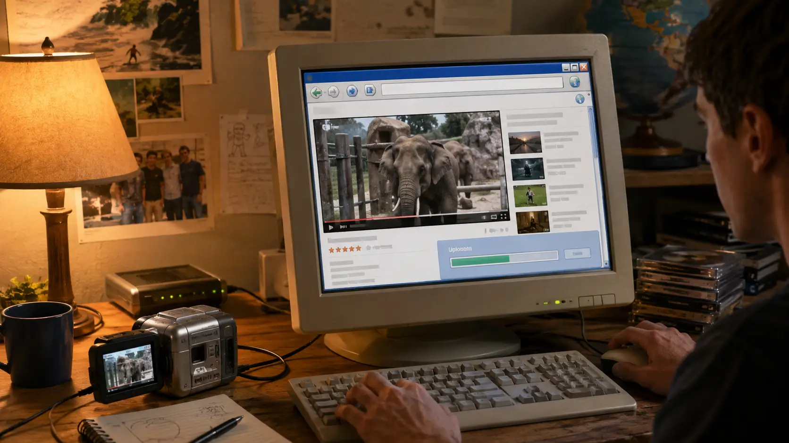
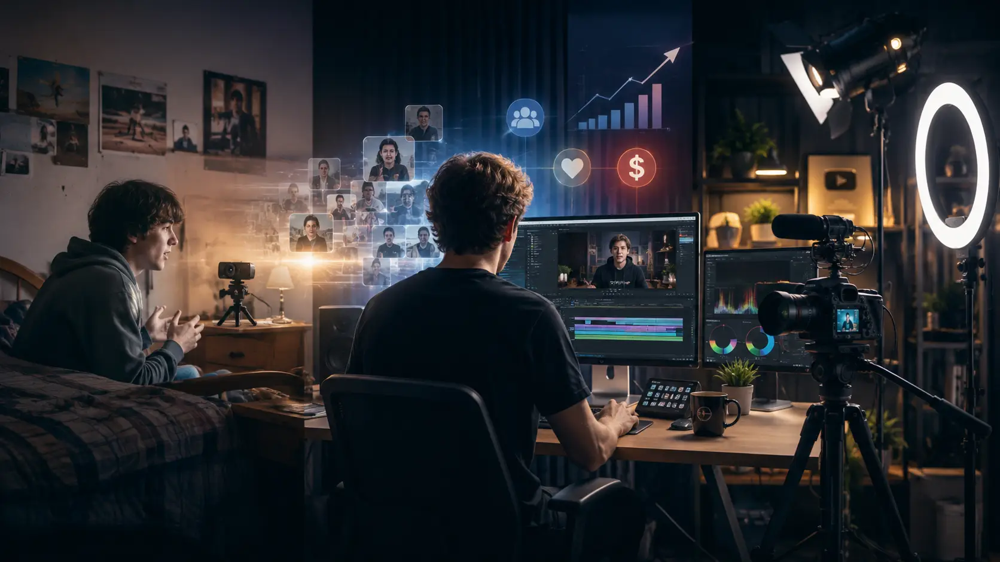
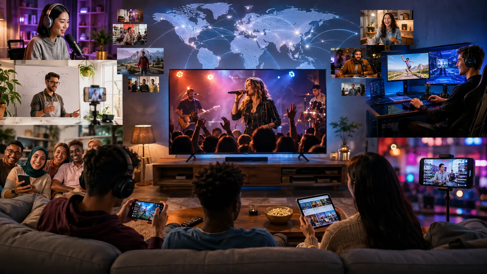
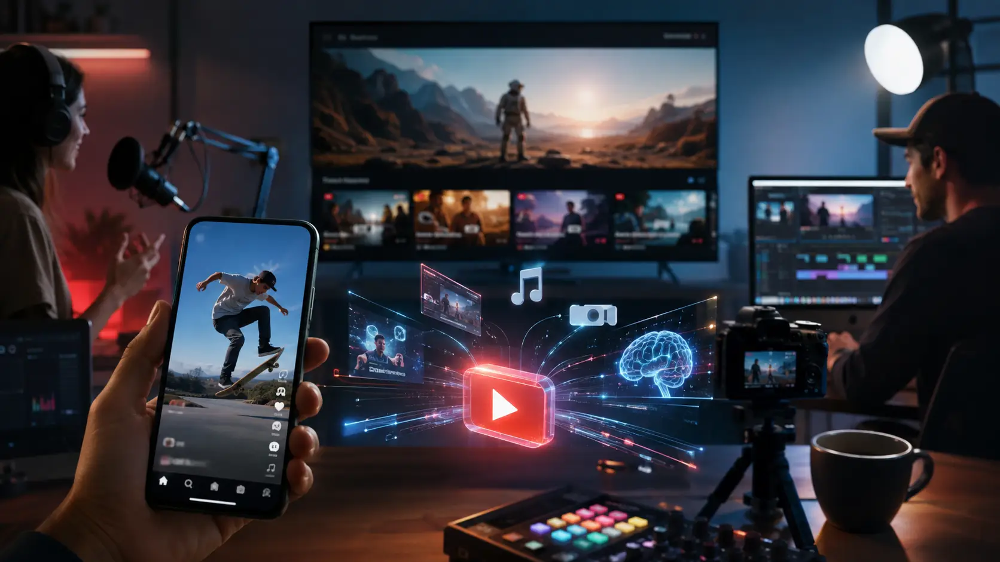
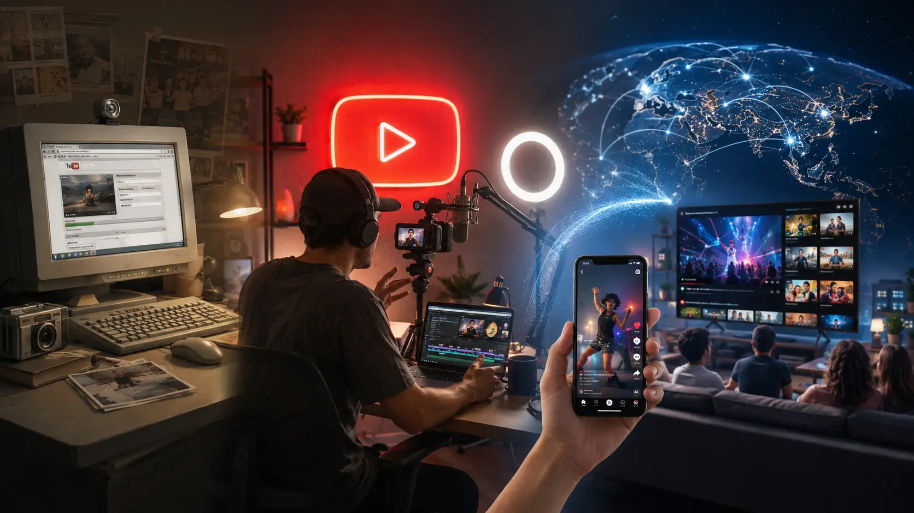

1. Before YouTube: Why Sharing Video Online Was So Difficult
It is easy to forget how different the Internet looked before online video became an ordinary part of everyday life. Today, someone can record a video on a phone, upload it within seconds and make it available to millions of people around the world. In the early 2000s, however, putting a video online could involve large files, slow connections, incompatible formats, specialized software and enough technical knowledge to discourage most ordinary users.
Video itself was not new to the Internet. Websites had experimented with streaming clips for years, and programs such as RealPlayer, QuickTime and Windows Media Player allowed people to watch different kinds of multimedia online. The problem was that there was no simple, universal system that allowed an ordinary person to take a video from a camera, upload it to one place and immediately send a convenient link to anyone else.
At the time, the Web had also been designed primarily around text and images. Native web technologies did not yet include the standardized
Internet speed was another major obstacle. Video files contain vastly more data than text or ordinary web images, which meant uploading or downloading them could be painfully slow. Broadband was expanding rapidly, but it was still far from universal. In the United States, for example, Pew Research Center found that only 30% of American adults had a high-speed Internet connection at home in March 2005. That figure would rise dramatically over the following year, but when YouTube was being created, a large part of the online population was still living in a world where bandwidth could not be taken for granted.
Even users with reasonably fast connections faced another problem: video formats. Digital cameras and camcorders could produce files in different formats, while computers and websites might rely on different codecs and media players. A file that worked perfectly on one machine might require additional software on another. Compressing a video to make it small enough for the Internet could reduce its quality, and converting it into the right format often required software and knowledge that casual users simply did not have.
The technology was beginning to improve. Flash Video, or FLV, arrived in 2003 and became one of the major technologies used to stream video through web browsers. Because Flash Player was already widespread, websites could increasingly provide video without forcing every visitor to download a completely separate media application. FLV would eventually become closely associated with the explosion of web video, including YouTube itself.
But playing a video was only half the problem. Someone still had to host it.
For an ordinary Internet user, publishing video could mean maintaining personal web space or finding a hosting service willing to handle files that were much larger and more bandwidth-intensive than photographs. Sending videos directly through email was also awkward because attachments had practical size limits, while sharing files through peer-to-peer networks was very different from giving someone a simple webpage where a video could instantly be watched. The Internet already allowed people to distribute digital video, but the process had not yet been reduced to something effortless.
This distinction is important because YouTube did not invent Internet video. What it helped solve was the distribution problem for ordinary people. Instead of expecting users to understand hosting, codecs, players, bandwidth and web development, the platform would increasingly handle those complications behind the scenes. A person would upload a file; YouTube would process it, host it, provide a player and generate a link that could be shared almost anywhere.
That idea sounds obvious today, but in 2005 it addressed a genuine technological and cultural gap. Digital cameras were putting video-recording capabilities into the hands of more people, broadband adoption was accelerating, and Flash-based playback was making browser video increasingly practical. The pieces needed for a mass-market video platform were finally beginning to come together. What was still missing was a service simple enough to connect them.
Years later, YouTube co-founder Chad Hurley described the original ambition in similarly straightforward terms: when the YouTube domain was registered on February 14, 2005, the goal was to create a place where anyone with a video camera and an Internet connection could share a story with the world.
The technology behind online video had been developing for years.
What happened next was the moment someone finally made it easy enough for almost everyone to use.
2. The Birth of YouTube in 2005
By the beginning of 2005, the technological conditions described in the previous section had created an obvious opportunity. Digital cameras were becoming more common, broadband connections were spreading, and people increasingly wanted to share pieces of their lives online. What the Internet still lacked was a service that treated video sharing with the simplicity that websites such as Flickr had brought to photographs. Three former PayPal colleagues — Chad Hurley, Steve Chen and Jawed Karim — decided to build one.
Their backgrounds complemented one another. Hurley brought a strong interest in design and product experience, while Chen and Karim came from more technical backgrounds. More importantly, all three had experienced the culture of PayPal during a period when the company was solving difficult problems of scale, payments and online usability. YouTube would attack a very different problem, but with a similarly ambitious objective: take something complicated on the Internet and make it simple enough for ordinary people to use.
Exactly what first inspired YouTube has become one of the more complicated parts of its origin story, because its founders have given several overlapping explanations over the years.
Hurley and Chen later recalled trying to share videos from a dinner party and discovering how inconvenient the process was. Their early vision was sometimes described as something resembling a video version of Flickr: a website built around ordinary people uploading and sharing their own clips. Karim, meanwhile, has pointed to another frustration. After major events such as Janet Jackson's controversial Super Bowl halftime-show incident in 2004 and the Indian Ocean earthquake and tsunami later that year, he found it surprisingly difficult to locate video footage online. Different accounts emphasize different moments, but all of them pointed toward essentially the same problem: Internet users were producing and looking for video, yet there was still no obvious central place where that video could easily be uploaded, discovered and shared.
There was also another idea at the beginning — one that seems almost bizarre when viewed from the modern YouTube era.
YouTube was initially conceived, at least in part, as a video dating service.
Steve Chen later explained that the founders thought dating was an obvious use for online video. Instead of relying only on photographs and written profiles, people could introduce themselves through short clips. The early site even used the slogan “Tune In, Hook Up.” The choice of launch timing was appropriate for such an idea: the YouTube domain was registered on February 14, 2005 — Valentine's Day.
But the dating concept did not last.
The founders soon recognized that restricting the platform to romantic introductions would unnecessarily limit what people could do with it. The more powerful idea was not video dating at all. It was simply giving people a place to upload whatever videos they wanted to share. Comedy, personal moments, music, pets, demonstrations, events, opinions and countless other forms of content could all exist on the same platform. The subject of the video mattered less than the system that made publishing it easy. Chen later described how the service moved away from its dating focus when users showed little interest in using it exclusively for that purpose.
This shift would become one of the most important decisions in YouTube's history. Instead of attempting to predict what people should upload, the founders created a platform and allowed its users to determine what online video could become. That principle would eventually produce genres and careers that barely existed in 2005: vlogging, video tutorials, gaming channels, reaction videos, unboxing videos, beauty creators, independent educational channels and eventually an entire global creator economy.
The technical experience also had to be radically simpler than what had come before. Users should not have to understand web hosting, manually prepare a webpage or worry about which media player every viewer had installed. The service could take an uploaded video, process it and present it through a web-based player, while giving that video its own page and an address that could easily be sent to someone else. Later, features such as embedding would make YouTube videos spread far beyond YouTube itself, allowing clips to appear on blogs, personal pages and social networks across the Web. This focus on reducing friction became one of the foundations of the platform's rapid growth.
There was nothing inevitable about its success. Other companies were experimenting with Internet video, and even YouTube's founders did not yet know exactly what their creation would become. What they had identified was a gap between the growing ability of ordinary people to record video and their limited ability to distribute it easily.
On February 14, 2005, YouTube existed as a newly registered website and an ambitious idea. Five years later, co-founder Chad Hurley would describe the original mission in remarkably simple terms: creating a place where anyone with a video camera and an Internet connection could share a story with the world.
Before that vision could become a global phenomenon, however, the empty platform needed something essential.
It needed its first video.
3. “Me at the zoo”: The First YouTube Video
Every enormous media platform has a beginning, and YouTube's is surprisingly modest. There were no celebrities, elaborate cameras, dramatic editing or carefully designed thumbnails. There was simply a young man standing in front of some elephants at a zoo.
On April 23, 2005, YouTube co-founder Jawed Karim uploaded a short video titled “Me at the zoo.” The 19-second clip, recorded at the San Diego Zoo in California, became the first video ever uploaded to YouTube.
The footage could hardly be simpler. Karim stands in front of the zoo's elephant enclosure, looks toward the camera and briefly talks about the animals, drawing particular attention to their extraordinarily long trunks. The video was filmed by his friend Yakov Lapitsky, and there is virtually nothing about it that resembles the carefully produced content that would eventually dominate parts of YouTube. There is no music, no introduction, no graphics and no attempt to create a spectacle.
And that simplicity is exactly what makes it so important.
“Me at the zoo” demonstrated what YouTube was fundamentally designed to enable: an ordinary person could record an ordinary moment and make it available to other people through the Internet. YouTube itself would later describe the clip as a remarkably simple expression of the platform's original premise — that anyone could turn on a camera and broadcast themselves with relative ease.
This was a major departure from the traditional media world. Television broadcasters decided what reached an audience. Film studios controlled expensive production and distribution systems. Even publishing video on the early Web could demand technical knowledge, hosting resources and compatible software. YouTube was beginning to remove those barriers. The person appearing in a video no longer needed permission from a television network, a production company or a distributor to put something in front of an audience.
The first upload also unintentionally foreshadowed one of the characteristics that would later define YouTube culture: people were willing to watch everyday life. Videos did not necessarily have to look professional or document extraordinary events. A personal story, an opinion, an experiment, a joke, a pet, a trip or simply someone talking into a camera could become content. Former YouTube CEO Susan Wojcicki later reflected that one of the early surprises of online video was precisely how interested audiences became in watching ordinary people share moments from their lives.
That idea would eventually grow into entire forms of entertainment that barely existed when Karim stood in front of those elephants. Vlogs would turn everyday routines into serialized entertainment. Creators would speak directly to audiences from bedrooms and home offices. Tutorials would allow people to teach skills without working for an educational institution. Gamers would build audiences by recording themselves playing. Musicians, comedians and filmmakers would bypass traditional gatekeepers and distribute their work directly.
None of that is visible in “Me at the zoo” itself, of course. The clip was not a carefully constructed manifesto for the future of media. Its historical importance comes largely from what followed.
The contrast is extraordinary. A platform that would eventually host everything from amateur home videos and music videos to documentaries, live broadcasts, educational courses, political debates and productions made by multimillion-dollar creator businesses began with 19 seconds at an elephant enclosure.
The original video remains on Karim's verified YouTube channel more than two decades later. In 2026, its significance received an unusual form of recognition when London's Victoria and Albert Museum acquired the video together with a reconstructed early YouTube watch page for its collection. The museum described the material as an important record of the Internet's transition toward an environment increasingly centered on user-generated multimedia, participation and social interaction.
It is difficult to imagine a more appropriate first video for what YouTube would eventually become. It was short, informal, personal and created outside the traditional entertainment industry.
No one watching Jawed Karim talk about elephants in 2005 could have known what was coming next.
Because once YouTube had its first video, the real challenge was getting everyone else to start uploading theirs.

4. The Website That Grew Faster Than Anyone Expected
When YouTube opened to the public in May 2005, it was still an experiment. The platform had a tiny team, almost no brand recognition and no guarantee that Internet users would actually want to spend their time uploading amateur videos. Even its founders could not yet know whether they had created a useful niche service or the beginning of something much larger. YouTube itself would later look back on that first launch by admitting that nobody involved could have imagined the ways people would eventually use the site.
What happened during the following months made that uncertainty disappear remarkably quickly.
YouTube's greatest advantage was not simply that it hosted video. Other websites could do that. Its real strength was how easily those videos could escape from YouTube and spread across the rest of the Internet. A clip could be emailed to a friend, linked from a blog or, most importantly, embedded directly inside another webpage. Instead of asking viewers to download a file or open a separate media application, YouTube provided code that allowed its video player to appear on other websites while the video itself remained hosted by YouTube.
That apparently simple feature became one of the most important decisions in the company's early history.
At exactly the same time, social-networking sites were exploding in popularity, particularly MySpace. Millions of users were decorating personal profiles, sharing music, writing blog posts and communicating with friends. YouTube videos could be embedded directly into those pages, effectively turning MySpace and countless personal blogs into distribution networks for YouTube. Years later, accounts of the company's rise would identify this ability to embed videos elsewhere as one of the major forces behind its early growth.
The relationship created a powerful viral loop. Someone could discover a video on YouTube, place it on a MySpace profile or blog, expose it to an entirely new audience and send viewers back toward YouTube, where they might discover other videos or decide to upload their own. Every user could therefore become a distributor without needing any formal connection to the company.
This was fundamentally different from traditional television. A television program depended on a broadcaster controlling when and where it appeared. A YouTube video could travel from website to website through ordinary users, spreading according to interest rather than a fixed programming schedule.
The kinds of videos appearing on the platform also began to expand rapidly. Personal clips were joined by comedy, music, television excerpts, performances and advertisements. One famous early example arrived in 2005 when a Nike commercial featuring Brazilian football star Ronaldinho circulated on YouTube and became one of the platform's first major viewing milestones, widely credited as the first YouTube video to pass one million views. Its success demonstrated that the site could distribute not only home videos but also entertainment and commercial material to enormous audiences.
Another turning point followed in December 2005 with “Lazy Sunday,” a comedy short from Saturday Night Live featuring Andy Samberg and Chris Parnell. Unofficial copies appeared on YouTube and accumulated millions of views before NBC eventually requested their removal over copyright concerns. The episode foreshadowed a problem that would become increasingly important for the company — users could upload copyrighted television and music just as easily as their own material — but it also demonstrated something powerful. Television content that had originally aired at one particular time could suddenly continue spreading online through sharing, embedding and word of mouth.
By late 2005, investors were paying attention.
On November 7, 2005, YouTube announced that it had received $3.5 million in funding from Sequoia Capital. The company said the investment would be used to support its rapid growth, improve product development and expand its business operations. It was a significant vote of confidence for a website whose domain had been registered less than nine months earlier.
The money was becoming necessary because YouTube's success created a problem that every rapidly expanding video platform eventually faces: video is expensive to store and distribute. Every new upload required storage capacity, while every playback consumed bandwidth. As more people arrived, YouTube had to keep expanding the infrastructure behind a service that users expected to work instantly and, for most of them, completely free of charge.
By the end of 2005, YouTube was already receiving millions of video views per day. What had begun as a small startup earlier that year was becoming a recognizable destination on the Web.
Then the numbers became extraordinary.
By March 2006, reports indicated that more than 25 million videos had been uploaded to the site and roughly 20,000 new videos were being added every day. Only a few months later, during the summer of 2006, YouTube said users were uploading more than 65,000 videos every day.
The audience was growing even faster.
In July 2006, YouTube reported that it had reached approximately 100 million video views per day. Independent measurement company comScore later examined global activity during that month and found that YouTube had served almost 3 billion video streams worldwide, averaging about 96 million per day and surpassing the 100-million mark on individual days. More than 63 million people worldwide visited YouTube during July according to comScore's measurement.
Those numbers were astonishing for a company that had existed for less than two years.
But the statistics alone do not fully explain what was happening. YouTube was beginning to change the behavior of Internet users. People were no longer visiting the Web only to read information, look at photographs or exchange messages. Increasingly, they were going online simply to watch video, jumping from one clip to another and allowing recommendations, links and friends to determine what they watched next.
At the same time, creators were discovering something equally important: an audience no longer had to be assembled through television, cinema or a traditional media company. A video uploaded by an unknown person could potentially reach thousands, hundreds of thousands or even millions of viewers.
YouTube had accidentally created a new distribution system for entertainment.
Its founders had begun with a practical problem — making online video easier to share. By 2006, they were operating one of the fastest-growing websites on the Internet, processing tens of thousands of new uploads every day while serving an audience that was expanding almost faster than the company could build infrastructure to support it. Contemporary coverage described its success as a combination of simplicity, enormous variety and the ability for ordinary users to publish and share material with almost no friction.
The little video-sharing website was no longer little.
And its explosive growth was about to attract the attention of one of the most powerful technology companies in the world.
5. Google Buys YouTube
By the second half of 2006, YouTube had become impossible for the technology industry to ignore. Only about a year after opening to the public, the site was delivering more than 100 million video views every day, while users were uploading approximately 65,000 new videos daily. What had started as a small Silicon Valley experiment was rapidly becoming one of the most important destinations on the Internet.
Google was watching closely.
The company already had its own online video service, Google Video, and possessed advantages that YouTube could only dream of: enormous computing infrastructure, one of the world's most recognizable Internet brands, sophisticated search technology and a hugely successful advertising business. Yet YouTube had accomplished something Google had not. It had become the place where Internet culture increasingly seemed to happen.
People were not simply using YouTube as a storage service. They were sharing clips, embedding them on other websites, commenting on them and returning to discover more. The platform had developed a community and identity of its own, while its explosive growth suggested that online video was becoming far more than a temporary Internet trend.
For Google, the question was increasingly obvious: should it continue trying to compete with YouTube, or simply buy it?
The answer arrived on October 9, 2006.
Google announced that it had agreed to acquire YouTube for approximately $1.65 billion in Google stock. The number was extraordinary for a company whose domain had been registered only around twenty months earlier. At the time of the announcement, Google described YouTube as one of the largest and fastest-growing online video entertainment communities and said the combination would bring together YouTube's audience with Google's technology, advertising expertise and global reach.
The acquisition was not structured as an attempt to erase YouTube and replace it with Google's own brand. Quite the opposite. Google announced that YouTube would continue operating independently, retaining its name, its community and its distinctive identity. The company's employees would remain with YouTube, and its operations would continue from San Bruno, California.
That decision would prove extremely important.
Google had purchased more than technology. It had purchased a culture. Millions of users already knew what YouTube was, understood how to use it and had begun developing habits around the platform. Renaming or absorbing it completely into Google Video could have damaged precisely the community that made the acquisition valuable.
Google CEO Eric Schmidt explained the strategic logic by describing YouTube as a media platform that complemented Google's broader mission of organizing information and making it accessible. Chad Hurley, meanwhile, emphasized that Google's global reach and technological resources would give YouTube greater freedom to continue building its vision for online media.
But the deal was about more than audience growth.
YouTube had become successful so quickly that success itself was creating enormous problems. Serving tens of millions of viewers required expensive infrastructure. Video files demanded substantial storage and bandwidth. The company needed ways to generate revenue without destroying the simplicity that had attracted users in the first place. And perhaps most dangerously, YouTube had become filled with material that its users did not necessarily own.
Television programs, music videos, film clips and copyrighted songs could be uploaded just as easily as an original home video.
For traditional media companies, YouTube therefore represented both an opportunity and a threat. Their content could suddenly reach enormous online audiences, but much of it could also appear without authorization. By the time Google entered the picture, resolving the relationship between YouTube and professional copyright owners was becoming one of the most important questions surrounding the platform.
The timing of the acquisition announcement reflected that reality. On the same day Google announced the deal, YouTube revealed partnerships with major entertainment companies including Universal Music Group, Sony BMG Music Entertainment and CBS, adding to an earlier agreement with Warner Music Group. These partnerships were designed to bring professional content onto the platform while developing ways for rights holders to benefit financially from online distribution.
Google was therefore acquiring something enormously valuable, but also enormously complicated.
The company had the resources YouTube needed to confront those problems. Google's infrastructure could help support rapidly increasing traffic. Its advertising technology offered a potential path toward monetization. Its engineers could improve search, recommendations and video delivery. Its relationships with advertisers could transform millions of views into a sustainable business. And its financial strength gave YouTube far more room to negotiate with major media corporations.
At the same time, Google was making a remarkable strategic bet.
The company was paying $1.65 billion for a young platform whose long-term business model was still developing, whose infrastructure costs were substantial and whose relationship with copyright owners remained uncertain. Google could not know with certainty what online video would eventually become. What it could see was that millions of people were already behaving differently because of YouTube.
They were choosing what to watch instead of accepting a television schedule.
They were sharing clips directly with friends.
They were publishing their own material without asking anyone for permission.
And increasingly, they were treating the Internet itself as an entertainment medium.
The transaction officially closed on November 13, 2006. Google issued more than 3.2 million shares of Class A common stock, along with additional equity instruments connected to the transaction, to complete the acquisition. The agreed value remained approximately $1.65 billion.
YouTube was now part of Google.
Yet rather than disappearing inside its new parent company, it continued to grow under its own name. Google supplied resources, infrastructure, advertising expertise and technological support while YouTube retained the brand and community that had made it successful in the first place.
In retrospect, the purchase would become one of the defining acquisitions of the Internet era. But its greatest consequence was not simply that Google had bought a popular website.
The acquisition gave YouTube the resources to transform from a rapidly growing startup into a permanent global platform.
And with that stability came another fundamental change.
Soon, uploading videos would no longer be something people did only for fun.
For the first time, YouTube was preparing to make it possible for ordinary creators to earn money from an audience of their own.
6. The Birth of the YouTuber
When YouTube first appeared, most people still understood fame through institutions. Actors became famous through films and television. Musicians needed record labels, radio stations and music channels. Comedians performed in clubs or appeared on television. Journalists worked for newspapers and broadcasters.
YouTube began creating another possibility.
A person could sit in a bedroom, point a cheap camera or webcam at themselves, upload a video and slowly build an audience that returned specifically to watch them.
The distinction was important. Viral videos had existed before YouTube, and the platform itself was already producing enormous individual hits. But a viral clip and a creator were not the same thing. A viral video might attract millions of views once. A creator could persuade viewers to come back repeatedly, subscribe to a channel, leave comments, respond with their own videos and begin following a personality rather than a single piece of content.
That was the beginning of what would eventually be called the YouTuber.
YouTube's early design helped make this possible. Users were not simply uploading isolated files into an anonymous archive. They had profiles and channels, and viewers could subscribe to creators whose videos they wanted to follow. Comments, private messages and other community features helped relationships form around the content. In 2006, YouTube even observed that users had spontaneously begun communicating through videos themselves, answering one another with what became known as video responses. The company described these different groups as individual “ecosystems” forming within YouTube, an early indication that the site was becoming a social community rather than merely a video host.
Some of the platform's earliest stars emerged from circumstances that would have seemed almost absurd under the traditional entertainment system.
Anthony Padilla and Ian Hecox, the comedy duo known as Smosh, became one of the defining examples. They had begun making humorous videos together before YouTube and started using the platform during its earliest period. Their lip-sync performances and comedy sketches attracted enormous attention, and by 2006 Smosh had reached the top of YouTube's subscriber rankings. At one point in May of that year, occupying the position of the platform's most-subscribed channel required fewer than 3,000 subscribers — a tiny number by later YouTube standards, but enough to demonstrate that audiences were beginning to organize themselves around recurring creators.
What mattered about Smosh was not simply that people watched their videos. Viewers began recognizing Ian and Anthony themselves. The personalities became the product. Their audience was interested in what they would make next, establishing a model that countless comedy channels, gaming creators, vloggers and entertainment personalities would later follow.
Another early creator, Brooke Brodack, known online as Brookers, demonstrated just how quickly Internet popularity could attract the attention of traditional media. Beginning in 2005, she produced comedic videos largely by herself, filming, editing and performing them without the infrastructure of a television production company. Her channel became one of YouTube's most subscribed in 2006, and her online popularity eventually led television host Carson Daly to offer her a development deal. Contemporary coverage treated creators such as Brodack as evidence that YouTube could introduce completely new voices to the entertainment industry.
The phenomenon was not limited to young comedians.
In August 2006, a 79-year-old British pensioner named Peter Oakley began uploading videos under the username geriatric1927. Sitting in front of a camera, Oakley spoke about his life, motorcycles, aging, his experiences during the Second World War and whatever else interested him. Within days, his quiet autobiographical videos had attracted a substantial audience. Wired described him at the time as YouTube's newest unlikely star, while his channel became one of the site's most prominent examples of how an ordinary person with no conventional entertainment career could suddenly find listeners around the world.
Oakley's success revealed something fundamental about YouTube. There was no obvious formula for who could become interesting. A teenager, a comedy duo, an aspiring performer or an elderly man telling stories about his past could all compete for attention on the same platform.
Audiences, rather than television executives, were increasingly deciding whom they wanted to watch.
Perhaps no early YouTube phenomenon demonstrated the power of this new relationship between creator and audience more dramatically than lonelygirl15.
The channel appeared in June 2006 and presented a teenage girl named Bree speaking directly to viewers from her bedroom about school, family, religion and her personal life. Her videos looked similar to the increasingly popular confessional video blogs being uploaded by ordinary YouTube users, and audiences became fascinated with her story. Viewers discussed the episodes, investigated clues, communicated with the character and debated whether what they were watching was genuine.
There was one major problem.
Bree was not real.
The character was played by actress Jessica Lee Rose, and lonelygirl15 was a scripted project created by independent filmmakers. When the truth emerged in September 2006, the revelation became news in its own right. Yet instead of destroying the project, the controversy demonstrated how emotionally invested viewers had already become in personalities they encountered through YouTube. The creators continued the story, increasingly incorporating audience reactions and interactive elements into the narrative.
Lonelygirl15 blurred boundaries that television had kept much clearer. Was this a vlog? A television series? An Internet drama? A social experiment? The answer was not particularly important. YouTube was creating formats that did not need to fit traditional categories.
More importantly, these early channels established a relationship that would become central to creator culture: direct familiarity.
Traditional celebrities usually appeared at a distance, through films, interviews, concerts or carefully managed publicity. Many YouTube creators appeared to speak directly to the viewer. They filmed in bedrooms, living rooms and ordinary homes. They responded to comments, referenced their subscribers and sometimes answered other users through videos. Their imperfections often made the relationship feel more personal rather than less professional.
The audience was no longer simply watching a performer.
It could feel as though it knew them.
By May 2007, YouTube itself was openly acknowledging what had happened. Announcing an expansion of its partnership system to popular community members, the company noted that some users had progressed from making webcam videos in bedrooms and living rooms to creating developed series, concept videos and sitcoms watched by tens of thousands of subscribers. YouTube explicitly described them as “YouTube celebrities” with fans and audiences all over the world. Among the creators named in that announcement were Smosh, lonelygirl15, LisaNova, renetto, HappySlip and valsartdiary.
That recognition marked an important cultural shift.
YouTube was no longer simply a website containing videos. It was developing its own stars.
And those stars did not necessarily need to look or behave like the celebrities created by traditional entertainment industries. Their production could be inexpensive, their subjects could be extremely specific and their audiences could grow gradually through subscriptions and recommendations rather than through expensive national advertising campaigns.
For perhaps the first time on such a massive scale, attention itself could be accumulated from the bottom up.
This would eventually reshape entertainment. Later generations of YouTubers would build audiences numbering in the millions and tens of millions. Gaming, beauty, technology, education, comedy, children's entertainment, commentary, lifestyle and countless other subjects would develop their own creator celebrities. Some would build companies, launch products, publish books, sell out arenas or cross into television, music and cinema.
But during YouTube's earliest years, none of that infrastructure existed yet.
People were creating because they wanted to create, audiences were gathering because they wanted to watch, and a completely new form of Internet fame was emerging almost by accident.
There was still one crucial limitation.
Having thousands — or even millions — of people watching your videos did not necessarily mean you could make a living from producing them.
YouTube had created the audience.
Now it needed to create an economy around it.

7. The Partner Program and the Creator Economy
By 2007, YouTube had already demonstrated that an unknown person could attract an audience without television, radio, a record label or a film studio. What it had not yet demonstrated was whether that attention could become a sustainable career.
For most early creators, popularity and income were largely separate things. A video might receive hundreds of thousands of views, a channel might accumulate loyal subscribers, and a creator might become recognizable across the Internet, but producing videos still usually happened in spare time and at the creator's own expense. YouTube had created a new route to fame, but not yet a reliable business model for the people providing much of its most distinctive content.
That began to change in 2007, with one of the most consequential decisions in YouTube's history: sharing advertising revenue directly with creators.
YouTube already worked commercially with established media companies, but on May 3, 2007, it announced that several of its most popular community members would also become official partners. Among those named were Smosh, lonelygirl15, LisaNova, renetto, HappySlip and valsartdiary. They would receive access to the same kinds of revenue-sharing and promotional opportunities that YouTube had previously offered to professional content partners.
The significance went far beyond those individual channels.
For the first time, the platform itself was formally acknowledging that people who had become popular because of YouTube could participate financially in the value their videos generated. Instead of YouTube simply selling advertising around user-created content, creators could receive a portion of the revenue associated with their work.
The relationship between platform and creator had fundamentally changed.
A successful channel was becoming something that could potentially function as a business.
Later that same year, YouTube opened the opportunity much more widely. On December 10, 2007, the company announced an expansion of the YouTube Partner Program, allowing eligible creators in the United States and Canada to apply directly for partnership, with plans to expand internationally.
That decision planted the foundations of what would eventually become known as the creator economy.
The basic logic was remarkably powerful. YouTube attracted viewers because creators uploaded material people wanted to watch. Those viewers created opportunities to show advertisements. Advertising generated revenue, and part of that revenue could return to the creators whose videos attracted the audience in the first place.
YouTube therefore had an incentive to help successful creators become even more successful.
Creators had an incentive to keep producing.
Advertisers gained access to audiences organized around particular interests and personalities.
And viewers received an almost endless stream of content without paying individually for most videos.
YouTube would later describe the launch of the Partner Program as the moment creators were able to share directly in the platform's revenue, creating a business model in which YouTube's success became increasingly connected to the success of its creators.
The consequences were enormous.
Once views could produce income, making videos began to change from a hobby into something creators could approach professionally. Someone who previously uploaded whenever they had spare time could begin thinking about schedules, production quality, audience retention and the long-term growth of a channel. Better cameras could be purchased with earnings from earlier videos. Editors could be hired. Sets could be built. Trips, experiments and increasingly ambitious productions could be financed partly by the audience generated by previous work.
The Internet had always allowed people to publish things.
YouTube was beginning to make independent publishing financially scalable.
This did not mean that every popular video suddenly made its creator rich. Earnings varied enormously depending on factors including the number and location of viewers, advertising demand, the subject of the content, whether advertisers considered it suitable for their brands and the types of ads being shown. Even creators with similar numbers of views could earn very different amounts.
Nor was advertising the only source of money that emerged around successful channels. As YouTube audiences grew, creators began developing businesses outside the platform's direct advertising system. Companies paid for sponsorships and product placements. Creators sold merchandise, performed live shows, signed publishing deals and promoted products to communities that trusted their recommendations. Specialized agencies and management companies appeared to represent online talent.
An ecosystem was forming around an occupation that had barely existed a few years earlier.
This transformation also changed the kinds of videos that could survive on YouTube.
Without financial support, producing extremely demanding content regularly becomes difficult. A creator might be able to make occasional videos after work or school, but large productions require time and resources. Monetization allowed at least some creators to devote more of their lives to their channels, which in turn allowed YouTube content to become more sophisticated.
Bedrooms and webcams did not disappear — and would remain an important part of the platform's identity — but they were increasingly joined by professional cameras, studios, teams of employees and production budgets that would once have seemed unimaginable for Internet video.
The change was particularly visible as new categories of creators matured. Gaming channels could purchase equipment and devote hours to recording and editing. Technology reviewers could build studios and acquire products. Educational creators could research elaborate videos. Beauty personalities could turn tutorials into businesses. Comedians could produce recurring shows without needing a television network. Musicians could reach international audiences independently.
A new career path was appearing: becoming a professional creator.
That concept would have sounded strange in 2005. Within a few years, it was becoming increasingly normal.
The Partner Program also gave YouTube something extremely difficult for competitors to reproduce: a reason for creators to stay. The best creators were no longer merely users uploading files to somebody else's website. They were business partners whose financial interests could grow alongside the platform.
Over time, YouTube expanded the ways those creators could earn money far beyond conventional advertisements. Revenue sharing eventually included income connected with YouTube Premium, while features such as channel memberships, Super Chat, Super Thanks, Shopping and other fan-funding tools created additional ways for audiences to support creators directly. The monetization system also expanded to short-form video; advertising revenue sharing for YouTube Shorts began in 2023.
For traditional media, the implications were profound.
Historically, a relatively small number of companies controlled access to mass audiences because producing and distributing media was expensive. Television networks owned broadcast infrastructure. Film studios financed production and theatrical distribution. Record labels controlled recording, promotion and relationships with radio and retailers.
YouTube did not eliminate those industries, but it dramatically lowered the barrier separating a creator from a global audience.
Someone could now build an entertainment business without first convincing an executive that they deserved one.
The audience could decide instead.
That shift eventually produced creators whose reach rivaled — and sometimes exceeded — that of established television personalities. Channels became companies. Individual YouTubers hired dozens or hundreds of employees. Successful creators launched clothing brands, food companies, consumer products, production studios and other businesses using audiences originally built through videos.
And the financial scale eventually became enormous.
By 2024, YouTube said that more than 3 million channels were participating in the YouTube Partner Program and that it had paid more than $70 billion to creators, artists and media companies during the previous three years. In 2025, the company announced an even larger milestone: more than $100 billion paid to creators, artists and media companies globally during the preceding four years. By 2026, YouTube continued to describe the Partner Program as a global community of more than 3 million channels capable of turning audiences into businesses.
The platform itself had also become an extraordinary business. Alphabet reported in February 2026 that YouTube's annual revenue from advertising and subscriptions combined had surpassed $60 billion.
None of this existed when “Me at the zoo” was uploaded.
In just a few years, YouTube had moved through several distinct stages: first making video easier to publish, then making unknown people famous, and finally creating a system through which at least some of those people could make a living from the audiences they had built.
The result was larger than a new form of entertainment.
YouTube had helped establish an entirely new economic relationship between creators, audiences, advertisers and platforms.
But as millions of people began competing for viewers, another force was becoming increasingly powerful. Creators could decide what videos to make, and viewers could decide what to watch — but between them stood a growing system responsible for deciding which videos people were most likely to see in the first place.
The YouTube algorithm was about to become one of the most influential forces on the platform.
8. How YouTube’s Algorithm Changed the Platform
As YouTube grew from millions of videos to an almost unimaginable ocean of content, a new problem emerged. Uploading video had become easy, but finding the right video was becoming increasingly difficult.
No human editorial team could manually decide what billions of viewers should watch. YouTube needed automated systems capable of sorting enormous amounts of content and matching individual videos with the people most likely to enjoy them.
That is where what users commonly call “the YouTube algorithm” became one of the most powerful forces in the platform's history.
The expression can be misleading because YouTube does not rely on one simple formula deciding the fate of every video. Different systems help rank search results, populate the homepage and determine which videos appear next to or after something a viewer is already watching. Those systems have changed repeatedly as YouTube has tried to answer a deceptively difficult question:
What should this person watch next?
The answer would eventually influence not only what audiences watched, but what creators chose to make.
In YouTube's earlier years, one of the most obvious measurements of success was the view count. A video that attracted large numbers of clicks appeared successful, and systems designed around clicks and views naturally rewarded content capable of making people open it.
But a click does not necessarily mean that somebody enjoyed what they found.
A provocative title or thumbnail could persuade millions of people to start a video and still leave many of them disappointed seconds later. YouTube increasingly recognized that measuring only whether someone clicked was a poor way to determine whether the recommendation had actually been useful.
In March 2012, the company announced a major change to its Related and Recommended Videos systems. Although clicks would still matter, time watched would become the leading indicator of engagement. Later that year, YouTube expanded the philosophy across its discovery systems, including search, explaining that it wanted to promote videos that did not merely attract clicks but kept viewers watching.
The consequences for creators were immediate.
A successful video could no longer depend entirely on convincing someone to click. It also had to persuade them to stay.
Introductions became increasingly important. Pacing mattered. Long stretches in which viewers lost interest could damage performance. Creators learned to examine audience-retention graphs and identify the precise moments when viewers abandoned their videos. Entire production styles began evolving around maintaining attention.
YouTube's incentives were influencing the grammar of online video.
The company explained in August 2012 that its recommendation systems were increasingly designed to maximize the amount of time viewers spent watching YouTube, including not merely the current video but subsequent videos as well. From YouTube's perspective, longer viewing sessions suggested that people were finding content they wanted to continue watching.
The change also created a subtle but important distinction.
YouTube was not simply asking, “Which video is popular?”
It was increasingly asking, “Which video is likely to keep this particular viewer engaged?”
Personalization therefore became central.
Two people opening YouTube could increasingly encounter completely different homepages. Someone who regularly watched football highlights might receive match analysis, documentaries and channels covering particular clubs. Someone interested in cooking could see recipes and restaurant videos. A gaming viewer might be surrounded by Minecraft, Fortnite or competitive gaming content.
Each click, search, viewing session, like, dislike and subscription provided additional information about what that viewer might want next.
As the platform became larger, the technology needed to make those decisions also became dramatically more sophisticated.
In 2016, Google researchers published a technical paper describing YouTube's recommendation system as one of the world's largest and most sophisticated industrial recommendation systems. The architecture described used deep neural networks and divided the process broadly into two stages: one system generated a manageable set of candidate videos from an enormous collection, and another ranked those candidates to determine which were most appropriate to show to a particular viewer.
The basic problem illustrates the scale involved.
YouTube cannot realistically compare every available video equally every time someone opens the homepage. It must first reduce an enormous universe of possibilities into a smaller group of plausible candidates and then determine which of those candidates should receive the most prominent positions.
Machine learning made that process increasingly personalized.
And the better YouTube became at predicting what viewers wanted, the more powerful recommendations became as a source of traffic.
YouTube has stated that recommendations now generate a significant portion of overall viewing on the platform — more than subscriptions or search.
That fact fundamentally changed the relationship between creators and their audiences.
A creator no longer needed every viewer to deliberately search for their name or already be subscribed. If a video performed strongly with the right audience, YouTube could begin showing it to people who had never encountered that channel before.
For small creators, this created extraordinary possibilities.
A channel with relatively few subscribers could occasionally produce a video that reached hundreds of thousands or millions of viewers if recommendation systems found a receptive audience. Conversely, a large subscriber count did not guarantee that every upload would receive equally large distribution.
The platform was increasingly evaluating individual videos and viewer responses, rather than simply assigning permanent importance to channels.
This made YouTube unusually dynamic, but it also created anxiety.
Creators began talking constantly about “the algorithm.”
Whenever views suddenly increased, the algorithm was credited. Whenever they collapsed, it was blamed. Entire communities formed around trying to understand changes in recommendation behavior. Creators experimented with video length, upload frequency, thumbnails, titles, posting schedules and almost every measurable variable in an attempt to determine what YouTube wanted.
But the system itself continued evolving.
Watch time had solved part of the problem created by optimizing primarily for clicks, yet it introduced another question: does spending more time watching something necessarily mean that the viewer valued the experience?
Not always.
A person might watch something compulsively, sensationally or out of morbid curiosity and later feel that the time had been wasted. YouTube therefore began incorporating additional signals intended to measure something more difficult than attention: satisfaction.
The company has explained that its recommendation systems consider signals including clicks, watch time, likes, dislikes, shares and responses to user surveys. Those surveys allow viewers to rate how valuable or satisfying they found particular videos, and machine-learning models can then use those responses to estimate satisfaction more broadly. YouTube refers to one of these concepts as “valued watchtime” — viewing time associated with content that users actually consider worthwhile.
This represented another major evolution.
The ideal recommendation was no longer simply the video most likely to generate a click or even the one most likely to produce the longest viewing session.
The goal was increasingly to predict the video that would leave that particular person satisfied over the long term.
By 2026, YouTube's own explanation of its recommendation system described two central objectives: helping each viewer find videos they want to watch and maximizing long-term viewer satisfaction. Its systems analyze signals connected with individual viewing habits and content performance, including watch history, what users ignore or dismiss, viewing duration, searches, likes, shares, comments, subscriptions, survey responses and similarities between audiences. Context such as device and time of day can also influence what is surfaced.
In other words, there is no universal ranking of the “best” YouTube videos.
The same video may be an excellent recommendation for one person and completely irrelevant to another.
Yet engagement and satisfaction were not the only considerations that eventually entered the system.
As YouTube became one of the world's most important sources of news and information, recommendations became entangled with much larger debates about misinformation, conspiracy theories, sensationalism and harmful content. A system built only to maximize user response could potentially amplify material that attracted attention for the wrong reasons.
YouTube therefore began adding additional quality and responsibility considerations.
The company says it was already limiting recommendations of certain violent or sexually suggestive material by 2011, later taking action against sensationalistic tabloid-style recommendations and developing additional systems for sensitive content.
In January 2019, YouTube announced another major intervention: it would begin reducing recommendations of what it called “borderline content” and videos capable of spreading harmful misinformation, even when those videos did not necessarily violate the platform's Community Guidelines and therefore could remain online.
This distinction was important.
A video could be allowed to exist on YouTube without YouTube deciding that it should actively recommend that video to millions of additional people.
During 2019, the company introduced more than thirty changes aimed at reducing such recommendations. YouTube later reported that watch time coming from non-subscriber recommendations of borderline content in the United States had fallen by roughly 70% compared with when that effort began.
For topics such as news, science and historical events, YouTube also began giving greater weight to assessments of authoritativeness, rather than relying entirely on the engagement signals that might work well for entertainment. Human evaluators and expert input have been used to train machine-learning systems designed to distinguish more authoritative information from material considered borderline or potentially harmful.
The recommendation system had therefore evolved far beyond counting views.
It was simultaneously trying to predict interests, measure engagement, estimate satisfaction, identify content quality and enforce broader platform priorities — all while processing an enormous volume of videos for audiences with radically different preferences.
For creators, this evolution transformed the art of making YouTube videos.
Titles had to attract attention without disappointing viewers. Thumbnails became increasingly sophisticated. The opening seconds of a video became valuable territory. Creators learned to remove unnecessary pauses, build anticipation, structure stories around retention and study analytics with a level of detail once associated mainly with television networks and advertising agencies.
Some of these techniques improved online storytelling.
Others helped create clickbait.
The tension was unavoidable. If creators knew that attracting a click could expose a video to more people, there was an incentive to create irresistible titles and thumbnails. If keeping viewers watching improved distribution, there was an incentive to construct videos around suspense, constant stimulation and delayed payoffs.
YouTube did not simply host Internet culture anymore.
Its recommendation systems were helping shape its form.
Yet the algorithm could never manufacture interest entirely on its own. For a video to spread, millions of viewers still had to participate: watching it, sharing it, imitating it, discussing it and sometimes transforming it into something far larger than its creator ever expected.
And throughout YouTube's history, certain videos escaped every reasonable prediction.
They became memes.
They became cultural references.
They accumulated hundreds of millions — and eventually billions — of views.
The age of the viral YouTube video had arrived.
9. Viral Videos and the Creation of Internet Culture
Long before YouTube became filled with professional studios, elaborate productions and creators running multimillion-dollar businesses, much of its appeal came from something far less predictable.
Nobody knew what would become famous next.
A man dancing through decades of popular choreography, two young brothers having an ordinary moment at home, an unknown singer appearing on a television talent show, an old music video unexpectedly becoming an Internet prank — almost anything could suddenly spread from person to person until millions of people were watching the same thing.
YouTube did not invent the concept of a viral video. Short clips had circulated through email, forums and early websites before the platform existed. What YouTube changed was the speed and scale at which that circulation could happen. Videos had individual links, could be embedded on other websites and could be shared repeatedly without every viewer needing to download and redistribute the original file. By 2006, contemporary coverage was already describing online video as a new environment in which inexpensive clips could reach audiences comparable to television.
One of the first great demonstrations was “Evolution of Dance.”
Uploaded by motivational speaker and comedian Judson Laipply in April 2006, the video showed him rapidly performing a sequence of recognizable dance styles associated with popular songs from different eras. The concept was simple, the production minimal and the result extraordinary. “Evolution of Dance” repeatedly occupied the position of YouTube's most-viewed video during the platform's early years and became one of the defining viral clips of the period.
Its success demonstrated something that traditional media had rarely experienced at comparable speed. A performance did not need a television network or an expensive promotional campaign to reach an enormous audience. Viewers themselves could perform much of the distribution simply by sending the video to one another.
Other early hits reinforced the pattern. The treadmill choreography in OK Go's “Here It Goes Again,” Diet Coke and Mentos experiments, amateur comedy, lip-sync performances and countless strange moments found audiences because Internet users decided that they were worth passing along. Wired's review of online video in 2006 already identified phenomena such as “Evolution of Dance,” OK Go and the Diet Coke-and-Mentos craze as defining examples of a rapidly developing video culture.
Then came perhaps the purest example of early YouTube virality.
In May 2007, a British father uploaded a short family video titled “Charlie bit my finger – again!” It showed his young sons Harry and Charlie sitting together before Charlie bit his older brother's finger. There was no planned comedy, professional production or attempt to manufacture an Internet sensation. The clip had originally been created for friends and family. Yet viewers found the brothers' reactions irresistible, and the video spread around the world. By 2010, TIME reported that it had surpassed 170 million views and had overtaken “Evolution of Dance” as YouTube's most-watched video.
Videos like “Charlie Bit My Finger” helped establish one of YouTube's most unusual characteristics: ordinary moments could become global cultural objects.
Traditional entertainment generally began with an intention to reach a large audience. Viral YouTube culture often worked in reverse. Something could be created for a handful of people and only afterward discover that the Internet had decided it belonged to everyone.
Virality also began transforming existing media.
A particularly famous example emerged in 2007 around Rick Astley's 1987 song “Never Gonna Give You Up.” Internet users began disguising links so that people expecting some other content would instead be sent to Astley's music video — the prank that became known as rickrolling. The meme spread through forums and YouTube, eventually becoming so recognizable that YouTube itself used the joke on April Fools' Day in 2008.
The significance of rickrolling went beyond the joke itself. A song released almost two decades before YouTube existed had acquired an entirely new cultural life because Internet users had collectively repurposed it. Context no longer belonged entirely to the original creator. Online communities could transform a piece of media into something new through repetition, remixing and shared understanding.
That participatory behavior became one of the defining features of YouTube culture.
When a video became popular, people often did more than watch it. They created parodies. They performed their own versions. They remixed the audio. They quoted memorable lines. They posted reactions. They copied dances. They combined clips with completely unrelated material. A single popular video could therefore generate hundreds or thousands of additional videos, each pushing the original idea into another corner of Internet culture.
A viral hit was increasingly not one video.
It was an ecosystem of responses.
This ability to transform viewers into participants made YouTube fundamentally different from television. Audiences had always discussed television shows, but YouTube gave those audiences the same distribution tools as the original creator. A viewer could watch something in the morning, record a response that afternoon and potentially have millions of people watching the response soon afterward.
By the end of the decade, YouTube was becoming one of the places where the world collectively experienced major cultural moments.
In 2009, the most-watched YouTube video globally during the year was footage of Susan Boyle's audition on Britain's Got Talent, which accumulated more than 120 million views across the versions counted by YouTube. Boyle's television appearance had happened in Britain, but YouTube allowed the performance to travel instantly far beyond the program's original audience. The same annual list included quintessentially Internet-native phenomena such as “David After Dentist”, which exceeded 37 million views, and “JK Wedding Entrance Dance,” with more than 33 million.
The contrast was revealing.
A professionally produced television performance and a family recording of a child recovering from dental anesthesia could occupy the same global popularity list.
On YouTube, the distinction between “professional media” and “Internet video” was beginning to matter less than whether people wanted to watch and share something.
By 2010, the scale of this culture had become enormous. YouTube reported that users watched more than 700 billion videos during that year and uploaded more than 13 million hours of footage. Its annual review highlighted phenomena including “Double Rainbow,” “The Annoying Orange” and the viral “Bed Intruder Song,” reflecting an Internet culture increasingly built from unpredictable mixtures of amateur footage, comedy, music and remixing.
But the clearest demonstration of how global YouTube culture had become arrived two years later from South Korea.
On July 15, 2012, South Korean musician PSY uploaded the music video for “Gangnam Style.” Its exaggerated horse-riding dance, memorable visual humor and immediately recognizable chorus allowed it to spread far beyond audiences that normally followed Korean pop music. Viewers around the world recreated the dance, celebrities referenced it, television programs imitated it and countless parody videos appeared.
On December 21, 2012, less than six months after its release, “Gangnam Style” became the first YouTube video in history to reach one billion views. Guinness World Records recorded the milestone at just over one billion views that day, while YouTube celebrated it as a completely unprecedented achievement.
The number mattered, but what it represented mattered even more.
A Korean-language song had become one of the most recognizable pieces of popular culture on Earth without needing audiences to understand every word. YouTube's distribution system had allowed a cultural product from one country to travel almost instantly through dozens of others, propelled by sharing, imitation and recommendation.
“Gangnam Style” demonstrated that viral culture no longer needed a common language.
It needed something people wanted to pass along.
The video's scale became so extreme that it eventually created a famous technical curiosity of its own. In 2014, “Gangnam Style” surpassed 2,147,483,647 views, the maximum value associated with the 32-bit integer counter YouTube had originally used for view totals, prompting the platform to accommodate much larger numbers.
Even YouTube's engineers had not originally designed the system around the assumption that one video might be watched billions of times.
Later milestones would make such numbers increasingly familiar. Music videos regularly entered the billions, children's videos developed immense repeat audiences, and Pinkfong's “Baby Shark Dance” eventually became YouTube's most-viewed video. Guinness World Records recorded more than 16.6 billion views as of February 4, 2026.
Yet virality cannot be understood only through record-breaking view counts.
Its deeper impact was cultural.
YouTube created an enormous shared library of references that did not originate from any single television network, film studio or country. A phrase from an amateur video could become a joke recognized internationally. A dance could be recreated thousands of times. An unknown musician could suddenly acquire a global audience. A decades-old song could return as a meme. A mundane family moment could become one of the most recognizable videos on the Internet.
The audience itself had become part of the creative process.
People no longer merely consumed popular culture.
They shared it, altered it, parodied it and helped decide what became popular in the first place.
That shift changed the meaning of mass entertainment. For much of the twentieth century, a relatively small group of media companies decided which songs, shows and personalities received global exposure. YouTube did not completely replace those gatekeepers, but it introduced an unpredictable second route to cultural relevance — one in which millions of individual users could collectively elevate something that no executive had selected in advance.
Sometimes it was a polished music video.
Sometimes it was a television audition.
Sometimes it was two children sitting on a chair.
And increasingly, the world's largest entertainment companies understood that ignoring this new culture was no longer an option.
YouTube had started by competing for people's time on the Internet.
It was now beginning to compete with television, music, cinema and the rest of the global entertainment industry itself.

10. YouTube Becomes a Global Entertainment Giant
For the first few years of its existence, YouTube was still frequently described as an Internet phenomenon: a website where people watched viral clips, amateur recordings and videos made by a new generation of online creators.
That description eventually became far too small.
As broadband improved, smartphones became widespread and Internet-connected televisions entered millions of homes, YouTube expanded into nearly every form of audiovisual entertainment. Music, gaming, comedy, education, children's programming, documentaries, podcasts, sports, news, livestreams and professionally produced shows all began existing alongside the homemade videos that had originally defined the platform.
YouTube was no longer simply competing with other websites.
It was competing for the same hours people once spent almost exclusively with television, radio, cinema and other traditional media.
One of the foundations of that transformation was international expansion. From the beginning, Internet distribution gave YouTube an advantage that conventional broadcasters did not possess: a creator in one country could potentially reach viewers almost anywhere without negotiating a separate television distribution agreement for every market.
Language remained a barrier, but geography increasingly did not.
This helped create an unusual entertainment ecosystem in which enormous channels could emerge independently in Brazil, India, Mexico, South Korea, Spain, Japan or countless other markets while remaining accessible worldwide. Music videos could cross national borders immediately. Gaming channels could develop international audiences around games understood across cultures. Tutorials could answer highly specific questions for anyone able to find them. Later, subtitles, automatic captions, dubbing tools and increasingly sophisticated translation technologies would make crossing language barriers easier still.
The rise of smartphones accelerated the transformation enormously.
The original YouTube had been built for an era when most people accessed the Internet through computers. But the arrival of powerful mobile devices meant that YouTube could travel everywhere. People could watch during a commute, while waiting somewhere, in bed or anywhere else they had a connection. Just as importantly, smartphones put increasingly capable video cameras in billions of pockets, dramatically lowering the barrier to becoming a creator.
Recording, editing, uploading and watching video were gradually collapsing into the same device.
This made YouTube less like a destination people occasionally visited and more like a permanent layer of everyday media consumption.
Music became one of the clearest examples of that transformation. YouTube had already played an enormous role in viral hits such as “Gangnam Style,” but over time it became fundamental to how audiences discovered and consumed music generally. Official music videos, lyric videos, live performances, remixes, covers, archival recordings and fan-created material accumulated on the same platform. YouTube later developed YouTube Music as a dedicated music service, while music remained deeply integrated into the main YouTube experience.
By 2025, YouTube said its music ecosystem had reached 125 million Music and Premium subscribers, including trial users, while the company continued describing itself as one of the world's central destinations for music discovery.
Gaming underwent a similar transformation.
Early YouTube creators had discovered that audiences enjoyed watching other people play games, explain strategies or react to new releases. What initially seemed like a niche activity eventually became one of the platform's largest entertainment categories. Let's Plays, walkthroughs, reviews, speedruns, Minecraft series, esports, livestreams and gaming commentary produced channels with enormous audiences. Games were no longer only something people played; they became something millions of people watched other people play.
The same principle spread across almost every imaginable subject.
Cooking channels began functioning like on-demand cooking shows. Technology creators became influential product reviewers. Educational channels created documentaries and lessons capable of reaching worldwide classrooms. Fitness creators offered workouts. Beauty creators built media and cosmetics businesses. Children's channels generated huge repeat audiences. Long-form interview shows and podcasts increasingly used YouTube as both a video platform and a discovery engine.
The boundaries between a “YouTube video” and a traditional television program steadily became harder to define.
Creators responded by raising production standards. Some channels moved from webcams and bedroom setups to professional cameras, dedicated studios and production teams. Successful creators hired writers, producers, editors, researchers, animators and business managers. Individual channels sometimes evolved into companies employing dozens or even hundreds of people.
Yet YouTube's great advantage was that professional production did not replace amateur creation.
Both could coexist.
A multimillion-dollar production could appear beside a video filmed on a phone minutes earlier. A major music label could upload next to an independent musician. A global news organization could compete for attention with an individual commentator. A professionally animated educational film could be recommended immediately after a creator speaking directly into a webcam.
That mixture became one of YouTube's defining characteristics.
The platform also expanded into live video, bringing another traditional-media function onto the Internet. Concerts, gaming sessions, interviews, political events, news coverage and creator broadcasts could now be watched as they happened while audiences simultaneously communicated through live chat. Over time, live streaming became important enough that creators could build substantial communities around regularly scheduled broadcasts rather than only prerecorded uploads.
YouTube was gradually absorbing the functions of multiple older media systems.
But perhaps the most symbolic transformation happened on the largest screen in the house.
For years, Internet video had primarily been associated with computers and later smartphones. Television remained the territory of broadcasters, cable companies and dedicated streaming services.
Then viewers began watching YouTube on televisions themselves.
Smart TVs, streaming sticks, game consoles and connected devices made accessing YouTube from a living room nearly as effortless as changing a television channel. Once that happened, the distinction between “watching YouTube” and “watching television” became increasingly artificial.
By early 2025, YouTube reported that viewers were watching more than one billion hours of YouTube content on television screens every day worldwide, and that television had become the primary device used to watch YouTube in the United States by watch time.
This was a remarkable reversal.
The service that had begun with a 19-second zoo video was now being consumed for billions of hours on the same screens traditionally dominated by television networks.
And the numbers showed that this was no longer a peripheral behavior.
Nielsen's measurement of U.S. television viewing placed YouTube ahead of every other individual media distributor for multiple consecutive months during 2025. In August 2025, YouTube accounted for 13.4% of all television viewing measured by Nielsen in the United States, ranking first among media companies.
The lead continued into 2026. Nielsen reported that YouTube represented 13.8% of total U.S. television watch time in May 2026, again placing it at the top of the company's Media Distributor Gauge.
At that point, calling YouTube merely a video-sharing website no longer described what it had become.
It was effectively one of the world's largest television platforms.
Yet the content viewers encountered there remained radically different from traditional television. Someone watching YouTube on a 70-inch television might spend an evening moving between a two-hour podcast, a professionally produced documentary, football analysis, a Minecraft video, a music performance, a ten-minute tutorial and several Shorts.
The screen was traditional.
The programming was not.
YouTube itself increasingly acknowledged this change. CEO Neal Mohan described television as central to the company's strategy, arguing in 2025 that for a growing number of people, “watching TV” effectively meant watching YouTube. The company also reported that television was the most-watched screen for more than half of the world's 100 most-viewed YouTube channels.
Creators began adapting accordingly. Some developed longer episodes, recurring programs and serialized shows designed specifically for living-room viewing. Podcasts that once seemed naturally associated with headphones increasingly became television content as well. In October 2025 alone, viewers watched more than 700 million hours of podcasts on living-room devices, according to YouTube.
This represented a deeper change than simply moving Internet videos onto a television.
The definition of television itself was changing.
Traditional television had been built around scarcity. A network possessed a limited number of channels and a limited number of hours to fill, so executives decided what deserved to be broadcast. YouTube operates under the opposite condition: abundance. Millions of creators can upload simultaneously, and recommendation systems attempt to construct a personalized schedule for every viewer.
By YouTube's twentieth anniversary in 2025, the platform said an average of more than 20 million videos were being uploaded every day.
No conventional television network could ever operate at that scale.
The business behind the platform had grown accordingly. Alphabet announced in February 2026 that YouTube generated more than $60 billion in annual revenue from advertising and subscriptions during 2025.
That figure helps illustrate how completely YouTube's position had changed since Google's $1.65 billion acquisition in 2006.
Google had purchased a rapidly growing video-sharing startup.
Two decades later, it owned an entertainment ecosystem generating tens of billions of dollars annually, supporting millions of creators and competing directly for television viewing time on a global scale.
YouTube had also become something traditional television could never entirely replicate: a platform simultaneously capable of serving the largest possible mass audience and the smallest conceivable niche.
Millions of people might watch the same global music video or sporting moment, while somewhere else a channel devoted to an obscure hobby could sustain a loyal community numbering only in the thousands. Both could exist within the same economic and technological system.
That combination of global scale and almost unlimited specialization is one of the central reasons YouTube became so difficult to classify.
Is it television?
A music service?
A social network?
A search engine?
A streaming platform?
An educational library?
A creator marketplace?
In practice, it has become elements of all of them.
By 2026, YouTube was no longer the alternative to mainstream entertainment.
It was part of the mainstream itself.
But becoming one of the world's most powerful media platforms brought responsibilities and conflicts that the three founders could hardly have imagined in 2005. Billions of uploads meant copyrighted material could spread globally. Enormous audiences meant misinformation and harmful content could reach people at unprecedented speed. Advertising money created disputes over which creators and videos deserved to earn revenue. Governments, musicians, film studios, news organizations, parents, advertisers and creators all developed competing expectations about what YouTube should allow.
The larger the platform became, the harder those conflicts were to avoid.
YouTube had conquered global entertainment.
Now it had to deal with the consequences.
11. Copyright, Controversies and the Problems of Growing Up
YouTube's greatest strength was also the source of some of its greatest problems.
Anyone could upload almost anything.
That openness had allowed unknown creators to find audiences, helped viral culture flourish and transformed YouTube into a global entertainment platform. But once hundreds of millions of people could publish video without asking permission from a broadcaster, record label or studio, YouTube also inherited an extraordinarily difficult question:
Who was responsible when users uploaded something they did not own — or something that should not have been there at all?
Copyright was the first major test.
From YouTube's earliest period, users uploaded television episodes, movie scenes, music videos, sporting events and songs alongside their own original material. For viewers, this enormous library was part of the attraction. For copyright owners, however, it could look like a gigantic distribution system operating without their permission.
The problem became impossible to ignore in 2007.
In March of that year, media company Viacom filed a lawsuit against YouTube and Google seeking more than $1 billion in damages, alleging widespread copyright infringement involving material from television properties including The Daily Show, South Park and other Viacom programming. The dispute became one of the most important early legal tests of how copyright law would apply to websites built around user-generated content.
At the center of the case was the Digital Millennium Copyright Act, or DMCA, a U.S. law enacted in 1998.
Under its so-called safe-harbor provisions, qualifying online services can receive protection from liability for infringing material uploaded by users, provided they satisfy certain requirements, including responding appropriately when copyright owners identify infringing material and request its removal.
The distinction was crucial for YouTube.
If every website were automatically legally responsible for every unauthorized file uploaded by every user, operating an open platform at YouTube's scale would become extraordinarily difficult. Viacom argued, however, that YouTube had gone beyond simply acting as a neutral host and had knowingly benefited from widespread infringement.
The legal battle lasted for years.
In 2010, a U.S. district court granted summary judgment in favor of YouTube and Google, finding that they qualified for the DMCA's safe-harbor protection against the copyright claims in the case. The litigation continued through appeals and another district-court ruling, before Google and Viacom finally announced a settlement in March 2014. The terms were not publicly disclosed.
But YouTube had already realized that winning arguments in court would not be enough.
If the platform wanted television studios, record labels, sports organizations and other major copyright owners to treat it as a legitimate business partner, it needed a technological system capable of managing copyrighted material at a scale that traditional takedown notices alone could never handle efficiently.
The answer became Content ID.
Launched in October 2007, Content ID allowed participating rights holders to provide YouTube with reference files representing material they owned. YouTube could then automatically compare uploaded videos against those references and identify potential matches. Depending on the rights holder's chosen policy, matching material could be blocked, tracked or allowed to remain online while advertising revenue was directed according to the applicable claim.
This transformed copyright enforcement from a largely manual process into an automated system operating across enormous catalogs.
It also created an unexpected business model.
Instead of treating every unauthorized use as something that had to disappear, copyright owners could sometimes choose to monetize it. A fan might upload something containing a copyrighted song, Content ID could detect the music, and the rights holder could choose to earn revenue from that use rather than remove the video entirely.
YouTube says Content ID has since processed billions of claims and generated billions of dollars in revenue for artists and other rights holders through reuse of copyrighted work.
But automation created problems of its own.
Copyright law is not always a simple question of whether two pieces of media match.
A video may legitimately contain copyrighted material because it is reviewing, criticizing, parodying or discussing it. Different countries have different copyright exceptions, and in the United States the doctrine of fair use can allow copyrighted material to be used without permission depending on factors such as purpose, amount used and effect on the market for the original work.
A computer can identify a matching song or video clip.
Determining whether the use is legally justified can be much more complicated.
YouTube therefore built dispute procedures into Content ID, allowing creators to challenge claims they believe are incorrect. The dispute system has existed since Content ID's launch, and YouTube has repeatedly modified its copyright tools in response to complaints from creators and rights holders. In 2019, for example, the company began requiring copyright owners making certain manual Content ID claims to provide timestamps showing exactly where the claimed material appeared in a creator's video.
The tension has never completely disappeared.
Rights holders argue that their work should not be freely exploited simply because someone uploaded it to a popular platform. Creators argue that automated claims can sometimes affect legitimate criticism, commentary or transformative uses. YouTube sits between them, attempting to operate a system that protects copyright without making lawful creative reuse impossible.
Copyright strikes remain separate from ordinary Content ID claims. Under YouTube's current system, a copyright strike generally results when content is removed following a legal copyright-removal request, while a Content ID claim typically does not itself produce a strike. Creators can pursue options including seeking a retraction or filing a counter-notification when they believe a removal was mistaken or legally protected.
But copyright turned out to be only one part of YouTube's growing responsibility problem.
As the audience expanded into the billions, nearly every difficult category of human behavior eventually appeared on the platform.
Harassment.
Graphic violence.
Dangerous challenges.
Hate speech.
Spam and scams.
Sexually explicit material.
Extremist propaganda.
Misinformation.
Content involving the exploitation or endangerment of children.
The challenge was fundamentally different from operating a traditional television network. A broadcaster chooses a limited schedule in advance and can review each program before transmission. YouTube receives material continuously from users around the world.
At that scale, moderation cannot depend entirely on someone sitting down and watching every video before it goes online.
YouTube developed Community Guidelines defining categories of prohibited content and a strike system for channels that violate those rules. The policies apply not only to public videos but also to other elements of the service, including comments, links, posts and thumbnails. Under the current system, a first violation will typically result in a warning, while repeated violations can produce strikes; three Community Guidelines strikes within the same 90-day period may result in permanent channel removal. Creators can also appeal enforcement decisions.
Yet deciding where the boundaries should exist is extremely difficult.
A violent image might be uploaded to glorify violence, but the same footage might appear inside a documentary exposing a war crime. Extremist propaganda might be prohibited, while a journalist reporting on that propaganda may need to show part of it. Medical claims may be dangerous misinformation in one context and legitimate historical documentation in another.
YouTube therefore recognizes exceptions for some material with sufficient educational, documentary, scientific or artistic context, illustrating why content moderation cannot always be reduced to identifying particular words or images.
The scale of enforcement became enormous.
YouTube increasingly combined machine-learning systems with human reviewers to identify violations. In 2018, the company published its first Community Guidelines Enforcement Report as part of an effort to make the process more transparent. By September of that year, YouTube said more than 90% of videos removed for violent extremism or child-safety violations during that month had received fewer than ten views, suggesting that automated detection was increasingly finding some harmful material before it could spread widely.
By the first quarter of 2026, YouTube's transparency reporting recorded approximately 9.8 million videos removed worldwide for Community Guidelines violations during the three-month period alone.
These figures illustrate the extraordinary moderation challenge created by an open platform operating at global scale.
But removing content is only one form of control.
YouTube discovered another powerful lever: money.
The expansion of the Partner Program had allowed creators to build careers around advertising revenue, but advertisers did not necessarily want their brands appearing beside every type of legal content on the platform. Something could be permitted under YouTube's Community Guidelines and still be considered unsuitable for advertising.
That distinction became particularly important during 2017, when concerns about advertising appearing alongside objectionable material placed major pressure on YouTube's relationship with brands.
YouTube responded by tightening and clarifying its advertiser-friendly content guidelines. In June 2017, for example, the company announced tougher monetization rules covering categories including hateful content, inflammatory or demeaning material and inappropriate use of family-entertainment characters. YouTube explicitly emphasized that content could remain allowed on the platform while still being ineligible for advertising.
For creators, the consequences could be enormous.
A video did not need to be deleted to lose much of its commercial value.
This gave rise to one of the most controversial words in creator culture: demonetization.
Creators began paying close attention not only to what YouTube permitted them to upload, but what advertisers were willing to support. Subjects involving violence, tragedy, controversial events, profanity or other sensitive themes could affect advertising eligibility. Automated systems sometimes classified videos incorrectly, producing recurring complaints that legitimate news, documentary or educational content had been financially penalized.
YouTube continued modifying these systems, including introducing self-certification tools and pre-publication checks designed to tell creators whether videos might face copyright or advertising restrictions before publication.
The relationship between YouTube, creators and advertisers had therefore become a complicated triangle.
Creators wanted freedom and predictable income.
Advertisers wanted brand safety.
YouTube needed both.
Then another controversy forced the platform to confront one of its most sensitive audiences: children.
YouTube had become enormously popular with younger viewers. Children's songs, cartoons, toy videos, family channels and educational material could generate extraordinary viewing numbers, often through repeated viewing.
But children require different privacy and safety protections from adults.
In 2015, YouTube launched YouTube Kids, an experience specifically designed for younger viewers. Yet children's content continued to exist throughout the main YouTube platform as well, and questions about data collection, targeted advertising and the treatment of young users eventually attracted regulatory scrutiny.
In September 2019, the U.S. Federal Trade Commission and the New York Attorney General announced a landmark settlement with Google and YouTube over allegations that the companies had violated the Children's Online Privacy Protection Act, or COPPA, by collecting personal information from viewers of child-directed channels without the required parental consent.
Google and YouTube agreed to pay $170 million — $136 million to the FTC and $34 million to New York — which the FTC described at the time as a record monetary penalty in a COPPA case. The settlement also required YouTube to create a system allowing channel owners to identify content directed toward children.
The changes affected creators throughout the platform.
Videos designated as Made for Kids became subject to restrictions intended to reduce data collection and personalized advertising, while certain interactive features were also limited. The result demonstrated something that had become increasingly clear throughout YouTube's history: rules affecting the platform did not remain isolated inside corporate offices or courtrooms. They could immediately change how millions of creators produced, categorized and monetized their work.
By this point, YouTube needed a broader philosophy for managing responsibility.
In 2019, the company publicly organized its approach around what it called the Four Rs:
Remove content that violates YouTube's policies.
Raise authoritative sources for important information.
Reduce the spread of borderline material that approaches policy limits without necessarily crossing them.
And Reward trusted creators who satisfy the additional standards required for monetization.
The framework revealed just how far YouTube had moved from its original philosophy of simply providing a place to upload videos.
The platform was now making several different decisions about content at once.
A video might be removed completely.
Another might remain online but receive fewer recommendations.
Another might remain discoverable but lose advertising.
Another might receive greater prominence because YouTube considered its source particularly authoritative for a sensitive topic.
The question was no longer simply “Is this video allowed?”
It had become “Should it be removed, recommended, monetized, restricted or amplified?”
Each of those decisions created its own controversies.
Critics concerned about harmful content have argued that YouTube has sometimes acted too slowly or allowed recommendation systems to amplify problematic material. Other critics have argued that the platform removes or suppresses too much, placing excessive power over public expression in the hands of a private corporation.
Creators can also find themselves caught between constantly evolving policies, automated detection systems, copyright owners, advertisers and government regulations.
There is no simple solution.
A completely unrestricted YouTube would inevitably contain material that advertisers, governments and many users would find unacceptable or dangerous.
A completely controlled YouTube would lose the openness that made the platform transformative in the first place.
The tension between those two extremes has become one of the defining problems of YouTube's adulthood.
And the challenge continues to evolve.
Artificial intelligence has introduced new concerns around realistic synthetic media, impersonation and deepfakes. In 2024, YouTube introduced a requirement for creators to disclose certain realistic altered or synthetic material that viewers might mistake for real events, people or places.
Protection of younger users has also continued expanding. In 2025 YouTube began extending machine-learning age estimation to more U.S. users so that teen protections could be applied according to estimated age, and in January 2026 the company introduced additional parental controls, including options related to how much time teenagers spend watching Shorts.
YouTube's problems therefore did not disappear as the company matured.
They became more complicated.
The platform that once needed only to solve the technical problem of letting people share video now had to navigate copyright law, children's privacy, advertising standards, misinformation, artificial intelligence, creator livelihoods, freedom of expression and regulations imposed by governments around the world.
Every solution created trade-offs.
Every new rule affected someone.
And every controversy demonstrated the same basic truth:
The more important YouTube became to global culture, the less it could behave like a simple website.
It had become an institution.
Yet while YouTube was becoming more regulated and complex, Google was simultaneously trying to expand what the service could sell beyond conventional advertising.
The next step would turn YouTube into something even broader: a subscription platform, a music service and an ecosystem extending far beyond the original idea of free online video.
12. YouTube Premium, Music and the Expansion Beyond Traditional Video
For most of its early history, YouTube had one dominant economic engine: advertising.
Viewers watched videos for free, advertisers paid to reach them, and part of that revenue flowed back to eligible creators and rights holders. It was a remarkably effective model, but it also created a dependency. YouTube's business was tied heavily to advertising demand, while some viewers increasingly wanted an experience with fewer interruptions and more control over how they watched and listened.
At the same time, another behavior had become impossible to ignore.
Millions of people were using YouTube not only to watch video, but simply to listen to music.
Official music videos existed beside live performances, remixes, covers, lyric videos and recordings that could be difficult to find on conventional music services. By the middle of the 2010s, YouTube was already describing itself as one of the world's largest music destinations. The challenge was turning that enormous, somewhat chaotic music library into a service that could compete directly with dedicated streaming platforms.
One of YouTube's first serious attempts arrived in November 2014 with YouTube Music Key.
Music Key entered beta as a paid subscription designed specifically around music consumption. It offered ad-free music, background playback and the ability to save material for offline listening. The introductory promotional price was $7.99 per month, and the subscription also included access to Google Play Music, which at the time offered a catalog of more than 30 million songs.
Those features may seem ordinary today, but they addressed an important weakness in the original YouTube experience.
YouTube had been designed primarily for watching.
Music listeners often wanted something different.
They wanted to lock their phones without stopping a song.
They wanted music to continue playing while they used another app.
They wanted downloads for situations without an Internet connection.
And many were willing to pay to remove advertising entirely.
Music Key was therefore more than a music subscription experiment. It was an early indication that YouTube was beginning to think beyond the traditional relationship of free video supported by ads.
The experiment soon evolved into something much larger.
On October 21, 2015, YouTube announced YouTube Red, a subscription service that would launch in the United States on October 28 for $9.99 per month. Unlike Music Key, Red applied across YouTube rather than concentrating mainly on music. Subscribers could watch YouTube without conventional advertising, save videos for offline viewing and continue playback in the background on mobile devices. The membership also extended into YouTube's emerging specialized applications, including YouTube Gaming and the newly announced YouTube Music app.
YouTube made an important promise when Red launched.
The free version of YouTube was not disappearing.
That distinction would remain central to the company's subscription strategy. Rather than converting YouTube into a conventional paywalled streaming service, Google created a paid layer on top of the enormous free platform.
People could continue watching without paying.
Subscribers would pay for convenience.
That approach allowed YouTube to preserve the accessibility that had fueled its growth while creating a second major revenue stream beyond advertising.
YouTube Red also attempted something more ambitious.
Beginning in 2016, subscribers received access to original films and series, many featuring established YouTube creators. YouTube was no longer merely hosting independent productions made by its users; it was financing exclusive entertainment of its own. Early Red Originals included projects involving creators such as PewDiePie, Lilly Singh, Rooster Teeth and others.
Over time, YouTube expanded that effort into increasingly polished productions.
One of the most significant examples was Cobra Kai, a continuation of The Karate Kid franchise that premiered as a YouTube Red original in 2018. Other productions included Step Up: High Water, Impulse and Liza on Demand. When YouTube reorganized its subscription services later that year, those shows became part of the YouTube Premium offering.
The Originals experiment showed how broad YouTube's ambitions had become.
It was trying to be a user-generated video platform, a creator economy, a music service and a subscription entertainment company simultaneously.
But the most important transformation came in 2018.
YouTube reorganized its paid products around two clearer brands: YouTube Music and YouTube Premium.
The redesigned YouTube Music was built as a dedicated music-streaming service with its own mobile application and desktop experience. Instead of forcing users to navigate ordinary YouTube whenever they wanted music, the new service organized songs, albums, artists and playlists around listening while retaining one of YouTube's unique advantages: the ability to connect conventional music releases with music videos, remixes, covers, live performances and recordings that might not exist elsewhere.
The paid tier, YouTube Music Premium, offered ad-free listening, background playback and downloads.
At the same time, YouTube Red was renamed YouTube Premium.
Premium included the paid YouTube Music experience while extending ad-free viewing, background playback and downloads across the broader YouTube platform. At launch in 2018, the U.S. price for new members was $11.99 per month, while Music Premium alone was priced at $9.99.
The distinction established the structure that remains recognizable today.
YouTube Music could compete directly for listeners interested primarily in music.
YouTube Premium could target people deeply invested in YouTube itself.
This created another important economic change for creators.
A Premium subscriber might never see an advertisement, but their viewing could still generate money for creators. Subscription revenue became another source of creator compensation, meaning the business relationship no longer depended entirely on whether an ad appeared before or during a particular video. YouTube has continued integrating subscription revenue into the Partner Program alongside conventional advertising.
Music benefited from the same dual-revenue model.
YouTube could generate money from advertising shown to free users while simultaneously collecting subscription fees from paying listeners. The company frequently describes this combination as a “twin-engine” model for the music industry.
The scale eventually became enormous.
In March 2025, YouTube announced that YouTube Music and Premium had reached 125 million subscribers globally, including users on trials.
By October of that year, YouTube said more than 2 billion logged-in viewers watched music videos every month and that it had paid more than $8 billion to the music industry during the twelve months between July 2024 and June 2025.
Those figures illustrate how differently music functions on YouTube compared with a traditional audio-only streaming service.
A fan might listen to an official studio recording.
Then watch its music video.
Then find an acoustic performance.
Then watch a concert recording.
Then discover a cover made by another creator.
Then encounter the song again inside a Short.
The boundaries between music streaming, video, fandom and creator culture are unusually porous.
YouTube also pursued another subscription experiment much closer to traditional television.
In February 2017, the company announced YouTube TV, and the service went live that April in several major U.S. metropolitan areas. Rather than offering user-generated videos, YouTube TV provided live television channels over the Internet, including news, entertainment and sports, initially priced at $35 per month. The service was designed as an alternative to conventional cable packages, emphasizing cloud DVR, multiple devices and the ability to cancel without long-term commitments.
The significance was almost ironic.
YouTube had originally helped audiences escape the rigid structure of traditional television.
Now it was selling television itself.
But it was attempting to rebuild that television experience according to Internet expectations: portable, searchable, available across devices and disconnected from conventional cable hardware.
YouTube therefore developed two very different relationships with television.
The main YouTube platform competed with television by offering creator-driven on-demand entertainment.
YouTube TV competed with cable companies by delivering traditional television networks through the Internet.
Together, they demonstrated how far the YouTube brand had expanded beyond the simple video-uploading website created in 2005.
Not every experiment lasted in its original form.
YouTube's aggressive push into exclusive Originals never transformed the platform into a direct Netflix-style competitor in the way some observers initially expected. Over time, the company's emphasis shifted back toward the ecosystem that had always distinguished YouTube most strongly: creators themselves. By 2026, YouTube's leadership was emphasizing how creators were independently building increasingly sophisticated shows, studios and media companies rather than relying on YouTube to behave like a traditional Hollywood network.
The subscription business, however, continued expanding.
YouTube experimented with additional tiers intended for people who wanted some Premium benefits without purchasing the complete package. Premium Lite was expanded into additional markets in 2025, offering a lower-cost option focused primarily on watching most non-music videos without ads. In February 2026, YouTube announced that Premium Lite would also gain background playback and downloads for most videos, while full YouTube Premium would retain the broader package including music content and YouTube Music Premium.
Then, in August 2026, YouTube announced that Premium Lite would expand to every country where YouTube Premium is offered. The company also detailed how revenue from Premium and Premium Lite would contribute to creator earnings through the Partner Program, further demonstrating that subscriptions had become integrated into the broader creator economy rather than functioning simply as an alternative way for Google to charge viewers.
The transformation is remarkable when compared with YouTube's beginnings.
The original service had essentially one proposition:
Upload a video and let other people watch it.
Two decades later, the YouTube ecosystem included free ad-supported video, premium subscriptions, dedicated music streaming, live television, creator memberships, fan funding, podcasts, livestreaming, television viewing and increasingly sophisticated entertainment businesses built directly by creators.
YouTube had not abandoned video.
It had built an expanding collection of businesses around video.
And just as the company was finding new ways to compete with music services and television, another competitor was beginning to change how younger audiences consumed content altogether.
Videos were getting shorter.
Phones were being held vertically.
And endless swiping was becoming one of the most powerful habits in social media.
YouTube was about to respond with one of the biggest changes to its format since the platform was created:
YouTube Shorts.

13. The Rise of YouTube Shorts
For most of YouTube's history, the platform had encouraged viewers to do something increasingly unusual on the modern Internet:
stay with one video.
Creators produced five-minute tutorials, ten-minute comedy sketches, twenty-minute gaming videos, hour-long podcasts and documentaries that could be longer still. YouTube's recommendation systems had evolved around convincing people not merely to click, but to continue watching.
Then the habits of mobile audiences began changing.
Short-form vertical video offered a radically different experience. Instead of selecting one video and committing several minutes to it, viewers could move through an effectively endless stream of clips with a single swipe. Each video had only a few seconds to attract attention before the viewer moved on.
By 2020, this format had become one of the most important forms of social-media entertainment.
YouTube could not ignore it.
On September 14, 2020, the company officially announced that it was building YouTube Shorts, describing the product as a new short-form video experience designed for people who wanted to create catchy videos using little more than their mobile phones. An early beta began rolling out in India, giving creators access to a new collection of mobile creation tools.
The first version was deliberately simple.
YouTube described Shorts as a way to express an idea in 15 seconds or less. Its creation tools included a multi-segment camera for combining clips, speed controls, timers and the ability to record alongside music. Just as importantly, YouTube introduced the behavior that would come to define the viewing experience: instead of repeatedly choosing videos from thumbnails, users could swipe vertically from one Short to the next.
It represented a major change in YouTube's interface.
Traditional YouTube asks the viewer to make repeated decisions: look at a title, examine a thumbnail, select a video and decide whether to continue watching.
The Shorts feed removes much of that friction.
The next piece of content is already waiting.
Swipe.
Watch.
Swipe again.
That seemingly minor interaction completely changes how videos are discovered.
A creator no longer needs a viewer to recognize their channel, search for their name or deliberately select their thumbnail from a crowded homepage. A Short can simply appear in front of someone who has never encountered that creator before.
For new channels, that created an exceptionally powerful discovery mechanism.
And YouTube possessed an advantage that a standalone short-form application could not easily reproduce.
Shorts existed inside YouTube.
The platform already contained an enormous library of music, videos and creators accumulated over more than fifteen years. It already had channels, subscribers, comments, recommendations and a mature creator economy. A person who discovered a creator through a 20-second Short could potentially subscribe to the same channel and later watch a 20-minute video, a livestream or an hour-long podcast.
Short-form and long-form content did not have to live in separate worlds.
YouTube began deliberately connecting them.
From the earliest development of Shorts, the company emphasized remixing as an important part of the format. Creators could take audio from eligible videos already available across YouTube and use it as the basis for new Shorts, allowing existing music and videos to generate entirely new waves of participation. Rights holders and creators retained controls over whether their material could be remixed.
This made YouTube's enormous archive part of Shorts' creative infrastructure.
An old song could suddenly become the soundtrack to a new trend.
A moment from a long-form video could inspire thousands of short remixes.
A musician could release a song and watch fans create their own videos around it.
A creator could transform one long production into several short clips that reached completely different audiences.
YouTube was no longer asking creators to choose between short-form and long-form video.
Increasingly, it wanted them to use both.
The experiment expanded rapidly.
After beginning in India in September 2020, Shorts reached the United States in beta in March 2021. By the following year, YouTube said Shorts had expanded to more than 100 countries worldwide.
Audience growth followed.
By 2022, Shorts was averaging more than 30 billion daily views, approximately four times the level YouTube had reported a year earlier. It was also being watched by around 1.5 billion logged-in users each month.
The short-form experiment had become one of YouTube's largest products.
But that created a familiar problem.
Could creators actually make money from it?
YouTube had spent years building a relatively mature advertising economy around conventional videos. Shorts were different. The feed moved continuously from one creator's video to another, which made simply attaching a conventional advertisement to each individual clip far less practical.
At first, YouTube used a temporary solution.
In May 2021, the company announced the YouTube Shorts Fund, a $100 million fund to be distributed during 2021 and 2022. Each month, YouTube would identify eligible creators whose original Shorts generated strong engagement and views and offer them payments. Unlike the traditional Partner Program, participation in the fund was not initially restricted to existing YPP members.
YouTube openly acknowledged that the fund was only a first step.
The long-term goal was to create a monetization system capable of supporting short-form creators in the same way the Partner Program had helped turn conventional YouTube channels into businesses.
That system arrived in 2023.
YouTube redesigned part of the Partner Program so that creators focused primarily on Shorts could qualify through short-form performance rather than needing thousands of hours of conventional long-form watch time. More importantly, advertising revenue from the Shorts Feed began being shared with eligible creators.
The system worked differently from monetization on ordinary videos.
Advertisements appear between Shorts in the feed rather than being permanently attached to one particular creator's clip. Revenue from those ads is pooled, with part of the money accounting for music-licensing costs. The remaining creator pool is distributed according to eligible Shorts viewing, and creators receive 45% of the revenue allocated to them.
This was a significant moment.
Short-form video was no longer merely a promotional tool for YouTube creators.
It could become a business model of its own.
But Shorts also changed what success on YouTube could look like.
Traditional creators often needed months or years to develop recognizable formats, accumulate subscribers and build a catalog large enough for recommendation systems to consistently find an audience. Shorts could expose a relatively unknown creator to millions of viewers extraordinarily quickly.
YouTube began producing examples of creators who had grown channels to millions of subscribers largely through short-form content. At the same time, its internal observations suggested that creators using several formats could gain advantages beyond the Shorts feed itself. In 2022, YouTube reported that creators uploading both Shorts and long-form videos were seeing stronger overall watch time and subscriber growth than comparable creators using only long-form video.
Music provided one of the clearest examples.
YouTube reported that official artist channels combining Shorts with long-form content were experiencing stronger watch time and subscriber growth, while short clips built around songs could introduce artists to audiences who might later explore full music videos, interviews and live performances. In January 2023, YouTube said that artists active on Shorts were receiving, on average, more than half of their new channel subscribers directly from Shorts.
The format therefore functioned as both entertainment and discovery.
A Short might be the entire experience for one viewer.
For another, it might be the entrance to an entire channel.
That relationship became one of the features distinguishing YouTube's short-form strategy. The same creator could publish a 30-second joke, a 12-minute video explaining how it was made and a two-hour livestream discussing the project with fans — all under the same channel identity.
YouTube was becoming a multi-format platform.
The scale continued increasing at extraordinary speed.
By 2023, YouTube Shorts had climbed to more than 70 billion daily views and was being watched by more than 2 billion logged-in users every month.
Only a few years earlier, Shorts had been an experimental beta available in a single country.
Now billions of people were encountering it.
The format itself also began expanding beyond its original definition.
The earliest Shorts had been designed around extremely brief clips, initially emphasizing videos of 15 seconds or less. The Shorts camera later supported recordings up to 60 seconds. Then, on October 15, 2024, YouTube expanded Shorts again, allowing eligible square or vertical videos of up to three minutes to be treated as Shorts.
The change was revealing.
Short-form video was becoming longer.
A creator could still produce a five-second joke or a 20-second trend, but three minutes allowed for storytelling, explanations, miniature documentaries and other formats that previously sat awkwardly between ultra-short social clips and conventional YouTube videos.
At the same time, Shorts gained increasingly sophisticated creation tools: templates, remix features, automatic captions, effects and eventually generative-AI capabilities such as tools based on Google's video-generation technology.
Shorts also began appearing somewhere that would once have seemed almost contradictory:
television screens.
Short vertical videos had been designed around smartphones, yet viewers increasingly consumed YouTube on connected televisions as well. YouTube reported that views of Shorts on connected TVs more than doubled between January and September 2023.
The same platform was therefore asking audiences to move fluidly between two radically different viewing behaviors.
On one side, people could sit on a sofa and watch a two-hour podcast or professionally produced documentary.
On the other, they could rapidly swipe through dozens of vertical videos lasting seconds.
Both were YouTube.
By 2025, the size of Shorts reached another level. CEO Neal Mohan announced in June that the format was averaging more than 200 billion views every day. YouTube repeated that figure going into 2026, describing Shorts as a massive discovery system spanning everything from niche interests to global trends.
The figure is difficult to comprehend.
Two hundred billion daily views does not mean two hundred billion different people; one viewer can generate many Short views while scrolling. But it demonstrates the extraordinary frequency with which short-form videos are now consumed.
And the format continued evolving in 2026.
YouTube said it planned to integrate additional content types, including image posts, directly into the Shorts feed, further blurring the boundary between a conventional video platform and the broader social-media feed model.
There was, however, another side to that enormous success.
The same frictionless design that makes Shorts easy to discover also makes them extraordinarily easy to consume continuously.
A user does not reach the end of an episode and consciously decide whether to begin another.
The next Short is one swipe away.
Then another.
Then another.
That has made short-form video part of broader debates about attention, screen time and the habits of younger users. In 2026, YouTube announced expanded parental controls that would allow parents to restrict how much time children and teenagers spend scrolling Shorts — including the ability to set the Shorts timer to zero.
The development illustrates how much YouTube had changed.
The company that once needed to persuade people that Internet video was worth watching now had to create tools to help some viewers stop watching it.
Shorts did not replace traditional YouTube.
That may be the most important part of the story.
Long-form videos remained central to the platform. Podcasts grew dramatically. Livestreaming continued. Music videos generated billions of views. Television screens became increasingly important. Shorts simply added another viewing language to the same enormous ecosystem.
A creator could now use YouTube for something lasting three seconds or three hours.
A viewer could discover an unknown channel through a Short and later spend an entire evening watching its longer productions.
The platform had evolved from a video website into something far harder to define: a system capable of competing simultaneously with short-form social media, television, music streaming, podcasting and traditional online video.
And by 2026, all of those pieces were operating at once.
To understand what YouTube had truly become after more than twenty years, it was no longer enough to look at any single format.
You had to look at the entire empire.
14. YouTube Today: Creators, Television and a Global Media Empire
More than twenty years after Jawed Karim stood in front of the elephants at the San Diego Zoo, the word YouTube describes something far larger than the website created in 2005.
It is still possible to upload a simple video from a phone and reach an audience.
But that same platform now contains multimillion-dollar productions, television-style shows, podcasts, music, livestreams, professional sports, news organizations, educational libraries, Shorts, independent films, shopping businesses and creators operating companies that increasingly resemble traditional media studios.
YouTube did not simply become bigger.
It became many different forms of media at the same time.
That is perhaps the best way to understand YouTube in 2026.
Someone opening the platform on a phone might rapidly swipe through Shorts. Another person might listen to a two-hour podcast while driving. A family could watch a creator's documentary on a living-room television. A student might search for an explanation of mathematics. A football fan could watch analysis after a match. Someone else might use YouTube almost entirely for music.
All of those experiences belong to the same ecosystem.
And the scale is extraordinary.
YouTube says Shorts now averages more than 200 billion daily views, while viewers around the world watch more than one billion hours of YouTube content on television screens every day. The platform also reports more than one billion monthly active viewers of podcast content. (blog.youtube) (blog.youtube)
Those numbers reveal something unusual about the modern platform.
The fastest and slowest forms of Internet entertainment are growing in the same place.
A viewer might spend ten seconds watching one Short and three hours watching a conversation between two people.
YouTube is trying to own both moments.
The YouTuber Becomes a Media Company
Perhaps the most important transformation has occurred on the creator side.
The earliest YouTubers often worked alone. One person might write, record, edit, upload and respond to comments from the same bedroom.
That model still exists.
But the upper end of the creator economy increasingly looks very different.
Successful channels can now employ producers, editors, researchers, camera operators, writers, designers, sales teams and business managers. Creators build studios, develop recurring shows, license formats, sell merchandise and launch companies beyond YouTube itself. YouTube CEO Neal Mohan has described leading creators as becoming the “startups of Hollywood”, arguing that creators are building studios and new entertainment businesses rather than merely producing isolated Internet videos. (blog.youtube)
The platform's own economic infrastructure demonstrates how large that transformation has become.
By 2026, the YouTube Partner Program included more than three million creators, according to YouTube. (blog.youtube)
And revenue no longer comes from one source.
Creators can potentially earn through conventional advertising, subscription revenue from YouTube Premium, channel memberships, Super Chat, Super Thanks, Shopping, sponsorships, merchandise and other commercial relationships. YouTube Shopping alone had more than 500,000 creators enrolled globally by July 2025, according to the company. (blog.youtube)
The amount of money flowing through the broader ecosystem has reached a scale that would have been unimaginable during the early Partner Program era.
YouTube reported in 2025 that it had paid more than $100 billion to creators, artists and media companies globally during the previous four years. (blog.youtube)
That figure does not mean that every YouTuber is wealthy. The creator economy remains enormously unequal, and only a fraction of channels generate enough income to support a full-time career. But it demonstrates that independent online creation is no longer a peripheral industry.
YouTube has become economic infrastructure for an entire professional class.
A career that barely had a name in 2006 now supports companies, employees and industries surrounding creators themselves.
The Television Screen Changes Everything
At the same time, YouTube's relationship with television has undergone perhaps the most surprising reversal in the company's history.
For years, online video was treated as the smaller, cheaper alternative to television.
Television had the large screen.
Television had professional production.
Television had the advertising money.
YouTube was where people watched strange Internet clips on computers.
That distinction has largely collapsed.
YouTube says viewers globally now watch more than one billion hours of its content on televisions every day. In the United States, television has surpassed mobile as the primary device for consuming YouTube by watch time. (blog.youtube)
And Nielsen's television measurements demonstrate how significant that shift has become.
In May 2026, YouTube accounted for 13.8% of all television viewing time measured by Nielsen in the United States, making it the largest individual media distributor in Nielsen's Media Distributor Gauge for the month. (nielsen.com)
This changes what creators can produce.
A creator who knows that a significant part of the audience is watching from a sofa on a large television can make something that behaves much more like conventional programming: long documentaries, serialized shows, elaborate competitions, interviews and productions designed to be watched rather than merely glanced at between other activities.
YouTube itself has increasingly adapted the television interface around this behavior.
The result is something historically unusual.
Creators who never owned a television station can now appear on millions of television screens.
They do not need a broadcast license.
They do not need a cable channel.
They do not need a traditional network executive to approve a pilot.
The distribution infrastructure is already there.
Podcasts Become Television
Nowhere is the collapsing boundary between old and new media clearer than in podcasting.
Podcasts were originally associated primarily with audio — something consumed through headphones while commuting, exercising or doing something else.
On YouTube, they increasingly became visual programs.
By February 2025, YouTube reported more than one billion monthly active viewers of podcast content. (blog.youtube)
And these programs are increasingly being watched on televisions rather than merely listened to on phones.
YouTube reported that viewers watched more than 700 million hours of podcasts on living-room devices during October 2025 alone. (blog.youtube)
The transformation is revealing.
A podcast recorded around a table can now function simultaneously as an audio show, a YouTube video, a television program, a collection of Shorts and a source of clips distributed across other social networks.
One recording can become an entire media ecosystem.
That is exactly the kind of convergence YouTube increasingly represents.
Shorts and Long-Form Video Live Together
YouTube's other great advantage in 2026 is almost the opposite of television.
It can be extremely short.
Shorts now averages more than 200 billion views each day, according to YouTube. (blog.youtube)
That means YouTube operates simultaneously at opposite ends of the attention spectrum.
The same person might watch fifteen Shorts in a few minutes and later spend an hour watching a documentary from one of the creators discovered through that feed.
This creates a relationship between formats that is difficult for more specialized competitors to reproduce.
Shorts can function as discovery.
Long-form video can deepen the relationship.
Livestreams can create real-time community.
Posts can maintain communication between uploads.
Memberships can turn dedicated viewers into paying supporters.
Shopping can convert influence into commerce.
A channel therefore does not have to represent one type of video anymore.
It can function like a miniature multimedia network.
Music Remains One of YouTube's Largest Worlds
Music continues to occupy another enormous part of the platform.
YouTube combines official recordings with music videos, live performances, remixes, covers, fan videos and Shorts using songs — forms of consumption that would traditionally have existed across several different businesses.
The paid side has also become substantial. YouTube announced in 2025 that YouTube Music and Premium had reached 125 million subscribers globally, including trials. (blog.youtube)
That subscription economy exists alongside advertising, allowing the company to make money from both viewers who pay and viewers who continue using YouTube for free.
Again, the defining characteristic is not one product.
It is the combination.
Music can begin as a Short, lead to an official music video, send someone into a live performance and eventually turn them into a subscriber.
Everything feeds everything else.
Artificial Intelligence Enters the Creation Process
Another major change is occurring behind the videos themselves.
Artificial intelligence has become deeply integrated into Google's broader technology strategy, and YouTube is increasingly bringing those tools directly into creation and discovery.
By 2026, YouTube had introduced generative-AI capabilities for Shorts and creator workflows, including technology derived from Google DeepMind's video-generation models. It has also announced AI-assisted editing, creation tools and Ask YouTube, a conversational discovery experience intended to let viewers ask questions about content and find videos in new ways. (blog.youtube) (blog.youtube)
This opens extraordinary possibilities.
A creator who lacks advanced visual-effects skills can potentially generate backgrounds or visual elements.
Editing can become faster.
Translation and dubbing can make channels more accessible across languages.
Search can become conversational rather than depending entirely on typed keywords.
But AI also introduces one of the most difficult challenges YouTube will face.
If realistic video can increasingly be generated rather than recorded, viewers need ways to distinguish between authentic footage and synthetic media. YouTube already requires disclosure in certain cases where realistic altered or AI-generated material could be mistaken for a real person, place, scene or event. (blog.youtube)
The same technology that lowers creative barriers can therefore lower the barrier to deception.
Once again, YouTube finds itself balancing opportunity against responsibility.
Creators Compete With Studios — and Work With Them
Traditional media has not disappeared from YouTube.
Quite the opposite.
Television networks, movie studios, record companies, sports organizations, newspapers and broadcasters all maintain major presences on the platform.
But they now occupy the same recommendation environment as individual creators.
A BBC report can be recommended beside an independent journalist.
A professional sports highlight can appear beside analysis filmed in a creator's home studio.
A major-label music video can compete for attention with an unknown musician's performance.
A Hollywood trailer can appear beside a creator-produced film.
The distinction between “professional media” and “creator content” has become increasingly difficult to draw from production quality alone.
Some creators now have enormous crews and budgets.
Some traditional media organizations deliberately adopt the informal visual language pioneered by creators.
And sometimes the two collaborate directly.
The old division between Hollywood and YouTube has therefore evolved into something much more complicated.
They are competitors, partners and increasingly participants in the same media economy.
YouTube Becomes an Advertising and Subscription Giant
Behind all of this sits an enormous business.
In February 2026, Alphabet revealed a financial milestone that illustrates just how far YouTube had moved from the uncertain startup Google purchased for $1.65 billion.
For the full year 2025, YouTube generated more than $60 billion in annual revenue from advertising and subscriptions combined. (abc.xyz)
That number puts YouTube's economic scale into perspective.
The platform now generates revenue through several interconnected engines: advertising around conventional videos, advertising in Shorts, subscription services, music, television products and commercial activity surrounding creators.
And unlike a traditional media company that must finance nearly everything it distributes, YouTube receives an enormous portion of its programming from creators who independently decide what to produce.
This produces one of the most unusual media business models ever built.
YouTube supplies the infrastructure, discovery systems, advertising marketplace and monetization tools.
Creators supply an effectively endless range of programming.
Viewers determine what succeeds through their attention.
Advertisers and subscribers supply much of the money.
The system then repeats.
The Largest Channel Can Exist Beside the Smallest Niche
Scale alone, however, does not explain YouTube's durability.
One of its greatest strengths remains the same idea that existed in 2005:
almost anyone can participate.
The platform can support enormous creators whose videos attract audiences comparable with major television productions while simultaneously serving tiny communities interested in extraordinarily specific subjects.
There does not need to be a television-sized audience for a subject to exist.
A channel devoted to restoring obscure machinery can find viewers.
Someone can teach an uncommon language.
A historian can produce a two-hour examination of a forgotten event.
A gamer can specialize entirely in one title.
A scientist can explain one field.
A collector can discuss objects almost nobody else cares about.
Traditional mass media was built around finding programming that enough people would watch simultaneously.
YouTube can build an individual media environment around almost every viewer.
That ability to combine mass culture with extreme niche culture remains one of its most powerful characteristics.
An Empire Without a Traditional Schedule
Calling YouTube a “media empire” can therefore be slightly misleading.
Traditional media empires are usually built around central control.
Someone decides the programming schedule.
Someone commissions the shows.
Someone determines what occupies the prime-time slot.
YouTube works differently.
It has enormous centralized power over recommendation systems, monetization rules and platform policy, but the actual programming is generated by millions of independent participants.
There is no single YouTube schedule.
There are billions of personalized ones.
One viewer's YouTube might consist almost entirely of football.
Another person's could be cooking and history.
Another's might contain K-pop, gaming and anime.
Another viewer could use the same platform primarily for political commentary or educational lectures.
The service is simultaneously universal and personal.
That contradiction helps explain how YouTube could evolve so dramatically without abandoning its original identity.
The formats changed.
The devices changed.
The creators became businesses.
Google built an enormous advertising and subscription machine around it.
Artificial intelligence entered the production process.
Television became one of its most important screens.
Yet the fundamental transaction remains recognizable:
Someone makes something.
Someone else chooses to watch it.
Everything YouTube has built during the past two decades exists around making that connection happen at an almost unimaginable scale.
By 2026, however, the next transformation is already beginning.
Artificial intelligence can increasingly create video, translate voices and change how people search. Living-room viewing is making creators look more like television studios. Shorts continue changing the rhythm of online attention. Shopping is bringing entertainment and commerce closer together. Regulators around the world are demanding greater accountability from digital platforms.
YouTube has already transformed several times since 2005.
There is little reason to believe the version we know today will be its final form.
The question is no longer whether YouTube will continue changing.
The question is what YouTube becomes next.
15. What Comes Next for YouTube?
Predicting YouTube's future is difficult for one simple reason: almost every version of the platform has eventually become something its founders could not have fully anticipated.
The YouTube of 2005 was built to make uploading and sharing video easier. It was not designed around professional creators, billion-view music videos, livestreaming, podcasts, artificial intelligence, subscription television or hundreds of billions of daily Shorts views.
Most of those things emerged later as technology, creators and audiences changed.
The safest prediction about YouTube's next twenty years, therefore, is not that one particular format will dominate everything else.
It is that YouTube will continue absorbing new ways of creating, discovering and consuming media while trying to keep them inside the same ecosystem.
By 2026, several parts of that next transformation are already visible.
Artificial Intelligence Will Change How Videos Are Made
The most obvious force is generative artificial intelligence.
AI is no longer an experimental feature sitting outside YouTube's normal creator workflow. Google is increasingly integrating it directly into the platform.
YouTube has already incorporated technology derived from Google DeepMind's Veo models into Shorts, allowing creators to generate video elements and backgrounds from prompts. It has also introduced AI-assisted editing tools capable of examining raw footage and producing an initial edited version, while other systems can help creators brainstorm ideas, understand analytics and develop content.
The scale of adoption is already significant. Alphabet reported that during December 2025, more than one million YouTube channels used the platform's AI creation tools on an average day.
The long-term consequence could be enormous.
Historically, improving the production quality of a YouTube channel required acquiring more skills or hiring more people. Editing, visual effects, animation, translation, sound design and graphic design could all require specialized knowledge.
AI increasingly lowers some of those barriers.
A creator may still need the idea, personality, judgment and story, but many technical steps surrounding production can become faster and more accessible. Someone working alone may eventually be capable of producing visual effects that once required a small studio.
This does not necessarily mean that creators themselves become less important.
In fact, YouTube's stated strategy points in the opposite direction. CEO Neal Mohan has argued that AI should function as another creative tool rather than replacing the people responsible for entertainment, emphasizing that creators themselves remain central to the future of the platform.
That distinction may become increasingly important as AI-generated content becomes easier to produce.
If everyone can generate technically impressive video, human identity may become more valuable rather than less.
Audiences may place greater importance on knowing who made something, why they made it and whether they trust the person behind it.
The Battle Over What Is Real Will Become More Important
The same technology that can help creators also makes deception easier.
Realistic synthetic video can depict people saying things they never said or events that never happened. Voices can be cloned. Faces can be altered. Entire scenes can be generated without a camera ever recording them.
YouTube has already begun responding.
Creators are required to disclose certain realistic altered or synthetic material when viewers could reasonably mistake it for reality. In May 2026, YouTube went further by introducing internal detection signals capable of automatically adding labels when its systems identify significant photorealistic AI use that a creator has not disclosed.
This is likely to become one of the defining challenges of the next era of video.
For most of YouTube's history, viewers could usually begin with the assumption that footage represented something that had actually been recorded, even if it had later been edited.
That assumption can no longer be guaranteed.
The platform of the future may therefore need to communicate not only who uploaded a video, but increasingly how that video was created.
Synthetic media will not necessarily be undesirable. It can enable animation, comedy, education, special effects and forms of storytelling that previously required enormous budgets.
The difficult part will be preserving the difference between creative fiction and deliberate deception.
YouTube's future will therefore involve not just generating more video, but establishing stronger systems for provenance, disclosure and trust.
Language Barriers Could Begin to Disappear
Another AI-driven transformation may be less controversial but equally significant.
For most of YouTube's history, language has limited the international reach of creators. A Spanish-language creator might technically be available to viewers everywhere, but someone unable to understand Spanish had little reason to watch.
Subtitles helped.
Human dubbing helped even more.
AI could make multilingual distribution dramatically easier.
In February 2026, YouTube announced that automatic dubbing had become available to everyone across 27 languages. It was also developing more natural “expressive” dubbing and testing technology capable of adjusting lip movement to better match translated speech. YouTube reported that in December 2025, more than six million viewers per day watched at least ten minutes of automatically dubbed content.
That technology has implications far beyond convenience.
A creator may eventually stop thinking of their potential audience as “people who speak my language.”
One video could be released simultaneously in English, Spanish, Portuguese, Hindi, Japanese, German and many other languages without requiring the creator to independently produce dozens of versions.
YouTube had already found that creators using manually supplied multilingual audio tracks could gain substantial viewing from audiences listening outside a video's original language.
If automatic translation continues improving, some of the largest barriers separating national creator ecosystems could weaken.
A cooking channel from Mexico could become easily accessible in India.
A Japanese science creator could develop an audience in Brazil.
A Brazilian historian could reach viewers in Germany.
A small creator could potentially become global much earlier in the life of a channel.
YouTube has always been geographically global.
The next stage could make it increasingly linguistically global as well.
Search May Become a Conversation
YouTube's search box has traditionally worked much like conventional web search.
A user types several words.
YouTube returns videos related to those words.
Artificial intelligence is beginning to change that interaction too.
At Google I/O in May 2026, YouTube announced a conversational search experience called Ask YouTube, powered by Gemini. Rather than relying exclusively on short search phrases, users can ask more natural questions and interact with the system while discovering videos.
Alphabet reported that more than 20 million viewers used the Ask feature during December 2025 as YouTube expanded AI-powered experiences for viewers.
This could eventually change one of YouTube's oldest behaviors.
Instead of asking:
“How to repair leaking faucet”
a viewer might ask:
“My kitchen faucet is leaking from underneath only when I turn on the hot water. What should I check first?”
The system could potentially understand the problem, identify useful videos and help the viewer move between relevant sections of them.
YouTube's enormous video library would then begin functioning less like a collection of individual files and more like an interactive visual knowledge base.
That possibility is particularly significant for educational and instructional content.
Millions of useful explanations already exist on YouTube.
The problem has always been finding exactly the right one.
AI could increasingly become the layer connecting a specific question to the specific moment inside a video where the answer exists.
Television May Become Even More Important
At the same time that YouTube is investing heavily in AI, another part of its future looks surprisingly traditional.
The television.
Connected TVs have already become one of YouTube's most important viewing environments, and the company is continuing to redesign the platform around the living room.
In 2025, YouTube introduced additional television-oriented tools intended to help creators organize channels into more bingeable collections and present higher-quality content on large screens. The company also reported that the number of channels generating six figures or more in revenue specifically from television screens had increased by more than 45% year over year at that point.
This trend could change creator behavior substantially.
The dominant stereotype of a YouTube creator once involved somebody talking into a webcam.
Future YouTube may include more creators producing shows.
Episodes.
Series.
Documentaries.
Competitions.
Travel programs.
Long-form interviews.
Creator-produced films.
The difference is that they may still operate independently rather than through traditional television networks.
YouTube is therefore moving toward a strange combination of old and new media.
The screen resembles television.
The viewing behavior resembles streaming.
The production company may be a YouTube creator.
The schedule is generated by recommendation systems.
And the catalog has no practical limit.
YouTube TV is evolving alongside that broader living-room strategy. In its 2026 roadmap, YouTube said it was preparing customizable multiview experiences and more than ten specialized YouTube TV packages covering areas such as sports, entertainment and news.
Rather than the Internet replacing television, YouTube increasingly appears to be helping redefine what television means.
Creators Could Become the Next Generation of Studios
That television transition connects to another important trend.
The largest creators are increasingly behaving less like individual influencers and more like media companies.
This is already happening.
Creators build studios, hire production teams, develop recurring formats and launch businesses around their audiences. YouTube has increasingly presented creators not as an alternative to professional entertainment but as part of its future.
The next logical stage is for some creator organizations to become permanent entertainment institutions.
A successful channel might eventually resemble a television network or production studio more than the personal page from which it began.
One creator could develop several shows.
Those shows could feature other personalities.
The company could own intellectual property, employ production crews, sell products and produce programming for several formats simultaneously.
Shorts could advertise longer episodes.
Podcasts could build relationships with audiences.
Livestreams could create community.
Television viewing could provide premium advertising.
Shopping could generate commerce.
The creator would no longer simply produce videos.
They would operate a media ecosystem inside YouTube's larger ecosystem.
This does not mean small creators disappear.
YouTube's unusual structure allows enormous professional channels and people filming alone at home to coexist.
The next major creator may still begin with almost nothing.
The difference is that there is now a much clearer path from that first upload to building an actual company.
YouTube Wants to Become a Shopping Destination Too
Entertainment is also moving closer to commerce.
Product recommendations have always been part of creator culture. Technology reviewers discuss phones and computers. Beauty creators recommend cosmetics. Gaming channels talk about equipment. Cooking channels use kitchen products. Fashion creators show clothing.
Historically, viewers usually needed to leave YouTube before buying those products.
YouTube increasingly wants to remove that step.
By the beginning of 2026, the platform said more than 500,000 creators were participating in YouTube Shopping, while the company was developing systems allowing viewers to purchase recommended products with less friction and, in some cases, without leaving YouTube. It is also using AI to help identify appropriate moments for product tagging.
If this continues, some channels could increasingly combine entertainment, advertising and retail.
A viewer watches a review.
The creator recommends a product.
The product appears directly beside the video.
The viewer buys it.
The creator earns a commission.
YouTube participates economically in the transaction.
That model could make creators even less dependent on conventional advertising and further strengthen the idea of the channel as a standalone business.
It also introduces another responsibility: maintaining transparency when the boundary between recommendation and commerce becomes less obvious.
Trust will remain essential.
If audiences stop believing that creators genuinely use or value the products they recommend, the commercial system becomes less powerful.
Once again, the human relationship between creator and viewer sits at the center of a highly technological business.
Shorts Will Probably Keep Evolving Rather Than Replacing Everything
The extraordinary growth of Shorts naturally raises another question:
Will short-form video eventually replace traditional YouTube?
The evidence so far suggests something more complicated.
YouTube is continuing to invest in Shorts while simultaneously expanding long-form television viewing, podcasts and livestreaming. The company appears to see the future not as one victorious format but as multiple formats feeding the same creator-audience relationship.
Shorts may increasingly become the front door.
A viewer encounters a creator for twenty seconds.
If interested, they visit the channel.
They watch a longer video.
Eventually they watch a livestream, subscribe, buy something or become a member.
That progression makes short-form content strategically valuable even when the Short itself is not the creator's final product.
YouTube has already expanded Shorts from its original 15-second concept into videos lasting several minutes, demonstrating that the definition of “short-form” itself can change.
Its future format could continue evolving.
But YouTube's greatest advantage may be precisely that it does not need Shorts to replace long-form video.
It can attempt to dominate both.
The Platform Will Face More Pressure to Prove It Can Be Trusted
Technology is only one side of YouTube's future.
The other is governance.
The more YouTube resembles television, commerce, education, social networking and a global information system simultaneously, the more governments and societies will expect it to accept responsibilities associated with all of them.
Questions involving children's safety, political misinformation, copyright, AI-generated impersonation, advertising transparency, extremist material and creator rights will not disappear.
New technologies will probably create additional disputes that do not yet have clear rules.
Who owns a video largely generated by AI?
When does synthetic imitation become impersonation?
How should recommendation systems treat AI-generated material produced at industrial scale?
How should children interact with endless personalized video feeds?
How much explanation should creators receive when automated systems affect their livelihood?
There are no final answers to these questions in 2026.
They will be part of the next chapter.
YouTube's future will therefore depend not merely on making the platform more powerful.
It will depend on convincing creators, viewers, advertisers, governments and copyright owners that increasingly powerful systems can still be managed responsibly.
The Next YouTube May Be Harder to Define Than Ever
Perhaps the most interesting possibility is that the word “YouTube” itself will continue becoming less useful as a description of one particular type of media.
The platform began as a place for online video.
Then it became home to creators.
Then music.
Then livestreams.
Then children's content.
Then premium subscriptions.
Then television.
Then Shorts.
Then podcasts.
Then shopping.
Now artificial intelligence is changing creation, translation and search at the same time.
The direction is increasingly clear.
YouTube does not appear to be trying to become one specific replacement for television, TikTok, Spotify, Twitch, podcast apps or online stores.
It is trying to create an environment broad enough that a viewer may use YouTube for pieces of all of them.
And the business continues to grow. Alphabet reported in July 2026 that YouTube advertising revenue increased 13% year over year in the second quarter of 2026, while the company continued investing heavily in AI throughout its products.
None of that guarantees that YouTube will dominate forever.
Internet history is filled with platforms that once appeared unbeatable.
Audience habits change.
New competitors emerge.
Technology creates formats nobody predicted.
Creators move toward whichever platforms offer the best combination of audience, creative freedom and economic opportunity.
YouTube's greatest protection against that fate may therefore be the same quality that has defined its history:
its ability to change without completely abandoning what came before.
When smartphones arrived, YouTube moved onto phones.
When creators became professional, YouTube built an economy around them.
When streaming moved onto televisions, YouTube moved into the living room.
When TikTok transformed short-form video, YouTube built Shorts.
When podcasts became visual, YouTube became one of their largest homes.
When generative AI emerged, YouTube began integrating it into creation, search and translation.
The next disruption will eventually arrive.
We simply do not know what it is yet.
But there is something remarkable about looking back from 2026.
A website originally built because sharing video online was too difficult now sits at the intersection of entertainment, technology, advertising, music, television, education, commerce and artificial intelligence.
Its first video lasted 19 seconds.
Its future may involve forms of media that do not yet have names.
And perhaps that is the most important fact about YouTube's first twenty-one years:
YouTube did not become one of the world's most important media platforms by predicting exactly what people would create.
It became one by giving them somewhere to create it.
What happens next will once again depend on what they decide to make.

Quick Facts
- YouTube was founded in 2005 by former PayPal employees Chad Hurley, Steve Chen and Jawed Karim.
- The first video ever uploaded to YouTube was “Me at the zoo,” featuring co-founder Jawed Karim at the San Diego Zoo.
- Google acquired YouTube in 2006 for approximately $1.65 billion in stock, only about a year and a half after the platform opened to the public.
- In May 2007, YouTube began admitting some of its most popular independent creators into its partnership system, helping establish the foundations of professional YouTube careers.
- The YouTube Partner Program has existed since 2007, allowing eligible creators to build businesses around their content through revenue-sharing and other monetization tools.
- Content ID launched in October 2007, giving participating copyright owners an automated way to identify matching material uploaded to YouTube and decide how it should be handled.
- By YouTube's 20th anniversary in 2025, the platform said an average of more than 20 million videos were being uploaded every day.
- YouTube operates localized versions of the platform in more than 100 countries and 80 languages.
- YouTube Shorts now averages more than 200 billion views per day, making short-form video one of the largest components of the modern platform.
- By 2025, YouTube Music and YouTube Premium had surpassed 125 million subscribers globally, including trial users.
- More than 2 billion logged-in viewers watch music videos on YouTube every month, according to YouTube's 2025 figures.
- “Baby Shark Dance” became the most-viewed video in YouTube history and had surpassed 16 billion views by June 2025.
- YouTube reported in 2025 that it had paid more than $100 billion to creators, artists and media companies during the previous four years.
- YouTube is no longer mainly a phone or computer experience. The platform says viewers watch more than one billion hours of YouTube on television screens every day worldwide.
- For the full year 2025, YouTube generated more than $60 billion in combined advertising and subscription revenue, according to Alphabet.
- By 2026, YouTube was increasingly integrating generative AI, automatic dubbing and conversational discovery tools directly into the platform. Its Ask feature was used by more than 20 million people during December 2025, while more than six million viewers per day watched at least ten minutes of automatically dubbed content.
- Despite all of its technological and commercial expansion, YouTube's basic idea remains remarkably close to the one that defined it in 2005: anyone can upload something, and potentially find an audience for it anywhere in the world.
The Big Question
Is YouTube Still a Video-Sharing Website — or Has It Become Something Entirely Different?
YouTube began with an extraordinarily simple idea: make it easy for ordinary people to upload a video and share it with the world.
More than two decades later, that description is still technically correct.
But it no longer comes close to explaining what YouTube actually is.
Today, someone can use the platform to watch a fifteen-second Short, spend three hours listening to a podcast, follow a livestream, discover new music, learn how to repair a car, watch a documentary on television, follow breaking news, support a creator financially or purchase a product recommended inside a video.
Creators can begin with a phone and eventually build companies employing entire production teams.
Musicians can reach audiences without relying exclusively on radio.
Independent educators can teach millions of people without owning a classroom.
Podcasters can compete for the same television screen as established broadcasters.
And a creator operating outside the traditional entertainment industry can potentially reach an audience larger than many television programs ever could.
So what exactly is YouTube now?
Calling it a social network explains the interaction between creators and audiences, but ignores television, music and long-form entertainment.
Calling it a streaming service captures part of the viewing experience, but fails to explain the millions of people who create the programming themselves.
Calling it a television platform makes increasingly more sense on living-room screens, yet Shorts behave much more like modern social media.
Calling it a music service ignores everything else.
Calling it a search engine for video describes another important function, but still only one piece of the system.
Perhaps the most accurate answer is that YouTube has become something that did not really exist before platforms like it emerged:
a global, personalized media infrastructure where almost anyone can be both the audience and the broadcaster.
That structure creates extraordinary opportunities.
It allows ideas to cross borders almost instantly. It gives niche subjects audiences that traditional mass media might never have served. It allows creators to build careers without first receiving permission from traditional gatekeepers. And it has created one of the largest libraries of human-made audiovisual information ever assembled.
But the same openness creates difficult questions.
Who decides what should be recommended?
How much influence should algorithms have over what billions of people watch?
How should creators be protected when their livelihoods depend on rules controlled by a private platform?
How should copyright owners be compensated without preventing legitimate criticism and creativity?
How should children be protected from systems designed to keep people watching?
And as artificial intelligence makes realistic synthetic video easier to produce, how will viewers know whether what they are seeing actually happened?
There is another question underneath all of them.
Who really controls YouTube?
Google owns the platform and determines its fundamental rules.
Algorithms strongly influence what receives attention.
Advertisers influence what can easily be monetized.
Governments impose laws and regulations.
Copyright owners control how their intellectual property can be used.
Creators decide what to produce.
And viewers ultimately decide what they are willing to watch.
YouTube exists because all of those forces interact.
Remove the creators and there is little worth watching.
Remove the viewers and creators have no audience.
Remove the infrastructure and neither side can easily reach the other at global scale.
That may be why YouTube has remained so difficult to replace completely.
Its greatest product was never any particular video.
It was the system connecting the person who makes something with the person who might want to see it.
In 2005, that connection began with a 19-second video filmed beside an elephant enclosure.
Today, it connects billions of viewing decisions across virtually every imaginable subject.
And as television, social media, artificial intelligence, music, commerce and online entertainment continue merging, one final question becomes increasingly difficult to answer:
Are we still watching YouTube — or are we watching what television, entertainment and the Internet itself are becoming?